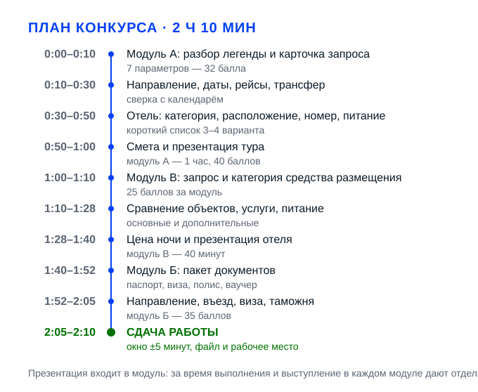
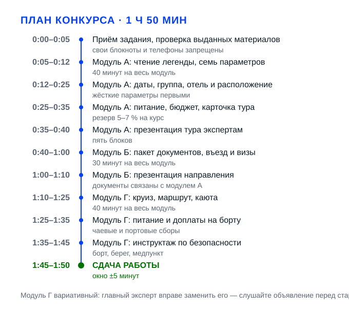
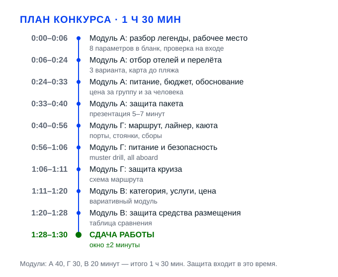

Агент по туризму (Р,О)
Задания ниже — официальные файлы «Абилимпикс» (источник: abilympics-russia.ru), разложенные по категориям. Решения написаны по тексту задания, регламенту и критериям оценки; в них указано, что именно проверяет эксперт.
Школьник
14–16 лет, базовый уровень заданияВыдержка из официального конкурсного задания: страницы, относящиеся к категории «Школьник» (стр. 3–6 источника).
Пошаговое решение
Задание для школьников — 2 часа 10 минут и 100 баллов: модуль А на час и 40 баллов, модуль В на 40 минут и 25 баллов, модуль Б на 30 минут и 35 баллов, причём модуль Б вариативный, и главный эксперт сам решает, к какому модулю привязать пакет документов. Уровень сложности для этой категории — лёгкий, по основным туристическим направлениям: тяжёлого оборудования здесь нет, вы сидите за компьютером, ищете, сравниваете и считаете, а потом защищаете выбор перед экспертами. Поэтому почти все баллы набираются не скоростью печати, а точностью: в легенде семь параметров, и каждый стоит от 1 до 5 баллов, а расхождение по датам или бюджету обнуляет сразу два критерия. Ниже — сорок шагов от чтения легенды до сдачи работы: что и как делать, зачем это по оценочному листу, как проверить результат и что обычно ломается.

Задача 1. Подобрать пакетный тур по легендеМодуль А · 40 баллов · 1 час
Модуль А — час времени и 40 баллов, из них 32 дают за точное попадание в параметры легенды: направление и даты поездки стоят по 5 баллов, продолжительность 5, средство размещения 5, место расположения 5, тип питания 3, количество и состав 1, бюджет 3. Ещё 5 баллов — за визуализацию и информативность презентации и 3 — за время выполнения и выступление. Логика модуля простая: сначала вы читаете запрос как задачу с условиями, потом подбираете тур, который проходит по всем условиям одновременно, и только затем показываете экспертам, что именно выбрано и почему.
Действие 1.1. Разобрать легенду и собрать карточку запроса
Шаг 1.1.1
Берём лист и расчерчиваем таблицу на восемь строк: направление, даты поездки, продолжительность, количество и состав туристов, средство размещения, место расположения, тип питания, бюджет. Легенду читаем дважды: первый раз целиком, чтобы понять, кто едет и зачем, второй — с карандашом, выписывая в таблицу каждое число и каждое ограничение, включая те, что спрятаны внутри фразы («с 12 по 19 июля», «вдвоём с ребёнком шести лет», «не дальше пятнадцати минут пешком от моря», «не больше восьмидесяти тысяч на человека»).
Точное попадание в параметры легенды — это 32 балла из 40: по направлению и по датам поездки дают по 5, по продолжительности 5, по средству размещения 5, по месту расположения 5, по типу питания 3, по количеству и составу 1, по бюджету 3. Все они измеримые: эксперт сверяет презентацию с легендой буквально по пунктам, и любая цифра, которую вы не выписали, будет потеряна или перепутана.
В таблице заполнены все восемь строк, и в каждой стоит значение из легенды, а не догадка. Даты записаны полностью с годом, продолжительность — в ночах, состав — с возрастом ребёнка, бюджет — с пометкой, он на всех туристов или на одного.
Самая частая ошибка — прочитать легенду один раз и работать по памяти: к третьему шагу «пятнадцать минут от моря» превращаются в «где-то рядом», и 5 баллов за место расположения уходят. Вторая — не заметить состав группы и подобрать номер на двоих, когда едет семья с ребёнком.
Эксперт подходит в первые пять-семь минут и смотрит, есть ли у участника письменная карточка запроса: по ней сразу видно, разобрал он легенду или начал искать отель наугад.
Шаг 1.1.2
Считаем не дни, а ночи, потому что отель продаёт ночи: заезд 12 июля и выезд 19 июля — это 7 ночей и 8 дней, и «неделя» в легенде почти всегда означает 7 ночей. Проверяем по календарю вручную: раскладываем даты по клеткам и пересчитываем, потому что разница в одну ночь меняет и стоимость проживания, и весь остаток бюджета. Если легенда называет только даты вылета, проверьте, совпадает ли день заезда с днём прилёта: иначе первая ночь в отеле оплачена, а туристы ещё в пути.
Критерий «по продолжительности» стоит 5 баллов и связан с бюджетом на 3 балла: лишняя ночь — это плюс стоимость номера, а недостающая — расхождение с легендой, которое эксперт увидит при сверке дат. Обе ошибки видны в презентации без всяких вопросов. Проверить себя можно так: число ночей плюс один должно давать число дней поездки, и если равенство не сходится, ошибка в счёте.
Число ночей равно разнице между датой выезда и датой заезда, даты в презентации совпадают с легендой до дня. Для 12 и 19 июля правильный ответ — 7 ночей; если у вас получилось 8, вы посчитали дни, а не ночи. Отдельно убедитесь, что дата выезда из отеля не выпадает на день вылета раньше расчётного времени, иначе последняя ночь оплачена зря.
Забронировать на одну ночь больше «на всякий случай»: бюджет уезжает вверх, а в презентации появляется цифра, которой в легенде нет. Обратная ошибка — вычесть ночь и получить тур, который не покрывает даты поездки целиком. На категории «Школьники» это стоит дорого: даты и продолжительность — 10 баллов из 40.
Эксперт сверяет даты и продолжительность в презентации с легендой и отдельно спрашивает, сколько именно ночей туристы проведут в отеле. Часто просит посчитать ночи вслух — так сразу слышно, считает участник промежутки или просто переписал число дней из легенды.
Шаг 1.1.3
Переводим бюджет в понятный лимит: если в легенде 240 000 ₽ на троих за 7 ночей, то на человека это 80 000 ₽, а за ночь на весь номер — около 34 300 ₽. Дальше смотрим, какая часть уходит на перелёт: если он забирает половину суммы, на отель остаётся примерно 17 000 ₽ за ночь, и это уже конкретная рамка для поиска, а не «подороже-подешевле». Три цифры — всего на группу, на человека и за ночь за номер — выписываем на тот же лист, где карточка запроса: дальше каждая карточка отеля проверяется именно по цене за ночь, а не по общей сумме, которая ничего не говорит о стоимости отдыха.
Критерий «по предполагаемому бюджету» — 3 балла, но он держит на себе выбор средства размещения на 5 баллов и тип питания на 3: выходить за бюджет нельзя, а внутри бюджета нужно ещё и объяснить, на что потрачены деньги. Если считать бюджет последним, отель уже выбран, и дальше начинается подгонка цифр под решение, а не решения под цифры — а это и есть главная причина, по которой туры не сходятся.
Записаны три цифры: всего на группу, на человека и за ночь за номер. При подборе отеля цена за ночь сравнивается именно с третьей цифрой, а не с общей суммой на всех. Если хотя бы одной из трёх цифр нет, вернитесь к легенде и пересчитайте: ошибка в делителе обходится дороже, чем минута арифметики на старте модуля.
Подбирать отель «по ощущению цены» и обнаружить перебор в конце модуля, когда времени на переделку нет. Ещё одна ошибка — считать цену за человека там, где она указана за номер: смета занижается вдвое. Третья ошибка — складывать суммы в разных валютах без пересчёта: итог получается числом, которому не соответствует ни один счёт.
Смотрит, есть ли в работе расчёт, а не только итоговая сумма, и просит назвать, сколько стоит ночь в выбранном отеле. Если участник называет только общую сумму, эксперт просит разделить её на ночи и на человека — это вопрос на понимание структуры цены.
Шаг 1.1.4
Делим пожелания на жёсткие и мягкие: жёсткие нельзя нарушить (даты, число туристов, бюджет, иногда тип питания), мягкие допускают варианты (конкретный отель, этаж, вид из окна, время вылета). Жёсткие обводим и держим перед глазами до конца модуля, мягкие записываем отдельным списком, чтобы было чем торговать при конфликте параметров. Полезно сразу проговорить вслух, что вы сделаете, если идеальный вариант не найдётся: например, сдвинете вылет на более дешёвый рейс, но даты заезда в отель оставите прежними.
В легенде параметры почти всегда конфликтуют: отель у моря дороже, прямой рейс дороже, «всё включено» дороже. Когда придётся выбирать, вы должны жертвовать мягким, потому что нарушение дат стоит 5 баллов, а вида из окна в критериях нет вообще. Проверяется это просто: эксперт сверяет с легендой то, что можно измерить, и приоритет всегда у измеримых параметров.
В карточке два списка, и при финальной сверке ни один жёсткий параметр не нарушен. Если чем-то пришлось пожертвовать, вы можете назвать это вслух и объяснить причину. Проверьте карточку на конфликт: если два жёстких параметра противоречат друг другу, это вопрос к эксперту, и задать его нужно в первые минуты, а не в конце модуля.
«Подвинуть» даты на день, чтобы отель оказался дешевле: это минус 5 баллов за даты и 5 за продолжительность сразу, а подмена видна при первой сверке с легендой. Молча нарушить жёсткий параметр и надеяться, что эксперт не заметит: легенда лежит перед ним, и сверка идёт по пунктам, так что подмена обнаруживается почти сразу.
На презентации задаёт вопрос «чем вы пожертвовали и почему» — этот ответ показывает, понимает ли участник, что такое ограничения запроса. Отдельно отмечает, умеет ли участник расставлять приоритеты: на чемпионате это едва ли не важнее, чем умение быстро искать отели.
Действие 1.2. Подобрать направление, даты и перелёт
Шаг 1.2.1
Проверяем, что происходит на направлении именно в даты поездки: сезон дождей или высокий сезон, дневная температура, школьные каникулы и местные праздники, когда закрываются музеи. Отдельно смотрим логистику: летают ли рейсы в нужные даты, есть ли прямые, сколько часов в пути и сколько длится стыковка, если она неизбежна. Если в легенде направление не названо, а описано словами («море, тепло, недорого, прямой перелёт»), подбираем страну под эти слова и обосновываем выбор теми же тремя фактами.
Критерий «по направлению» стоит 5 баллов, и это не просто название страны на слайде: эксперту важно, чтобы участник объяснил, почему направление подходит этим туристам именно в эти даты. Те же факты работают на информативность — ещё 3 балла. Если направление выбрано вами, а не задано в легенде, добавьте фразу о том, почему именно оно: это тоже часть ответа.
В карточке направления записаны минимум три факта: погода в даты поездки, сезонность и время в пути. Вы называете их без подглядывания в интернет, потому что выписали заранее. Хороший тест — рассказать о направлении в трёх предложениях человеку, который там не был: если после рассказа понятно, что взять с собой, факты подобраны верно.
Назвать направление и не знать, что в это время там сезон дождей или пик жары: эксперт задаёт один уточняющий вопрос, и 3 балла за информативность тают на глазах. Пересказывать рекламный текст туроператора тоже не помогает: там нет ни сезона, ни времени в пути, а вопросы эксперта идут именно по этим пунктам.
Слушает, как участник обосновывает выбор направления, и проверяет, совпадает ли сезонность с датами из легенды. Может спросить, что изменилось бы, если бы поездка была на месяц позже: ответ показывает, работал участник с сезонностью или просто выучил фразу.
Шаг 1.2.2
Выписываем рейсы туда и обратно на нужные даты с временем вылета и прилёта и смотрим на календарь: рейс может летать не каждый день, а вылет вечером съедает первый день отдыха. Отмечаем дни недели и проверяем, что обратный рейс не уходит раньше, чем заканчивается бронь в отеле, иначе получится день, оплаченный дважды или не оплаченный вовсе. Если рейс на нужную дату не летает, это не повод менять даты: ищем перелёт с пересадкой или соседний аэропорт, а в презентации честно указываем, чем обусловлен выбор.
Даты поездки — это 5 баллов, и они проверяются буквально: эксперт сравнивает число, месяц и год в легенде и в презентации. Рейс — единственная часть тура, которую нельзя подогнать задним числом, поэтому его сверяют первым. Если даты не совпали, остальные баллы модуля уже не спасают: тур просто не соответствует запросу.
Дата вылета туда и дата возврата совпадают с легендой до дня, в презентации указаны номера рейсов и время. Обратный рейс вылетает не раньше окончания проживания. Сверьте день недели: если рейс летает по вторникам, а в плане стоит понедельник, в календаре ошибка.
Выбрать удобный по цене рейс, который прилетает на сутки позже: отель простаивает, туристы теряют день, и весь тур перестаёт соответствовать датам из легенды. Бронировать отель с заездом в день прилёта, не сверив время: если рейс приходит вечером, первая ночь оплачена, но фактически не использована.
Сверяет даты в презентации с легендой и смотрит, назвал ли участник время вылета, а не только дату. Отмечает, названо ли время прилёта: по нему видно, успевают ли туристы на трансфер.
Шаг 1.2.3
Считаем путь от аэропорта до отеля в минутах, а не в километрах: смотрим, какой трансфер предлагает отель или туроператор — групповой автобус с заездом в другие отели или индивидуальный, — и сколько по времени занимает дорога. Для семьи с ребёнком разница между сорока минутами и двумя часами в автобусе после перелёта — отдельный аргумент в презентации. Если в легенде есть ребёнок или пожилой турист, отдельно отмечаем, есть ли ночной прилёт: после него любой трансфер переносится тяжелее, и это аргумент за отель ближе к аэропорту.
Место расположения средства размещения — 5 баллов, и оценивается оно не только по расстоянию до моря: досягаемость от аэропорта тоже часть расположения. Эти же цифры делают презентацию информативной, а это ещё 3 балла. Если трансфер платный, он идёт отдельной строкой в смете, иначе бюджет тихо уезжает вверх.
В презентации есть строка «аэропорт — отель: N минут, трансфер такой-то». Если цифры нет, шаг не выполнен, даже когда сам отель выбран правильно. Проверьте, входит ли трансфер в стоимость или оплачивается на месте: эта деталь должна быть в смете, а не выясняться в аэропорту.
Хвалить отель «рядом с аэропортом», не проверив дорогу: на карте близко, а по факту два часа с заездами. Эксперт ловит это вопросом о трансфере. Считать расстояние по прямой линии: дорога в горах или объезд залива превращают двадцать километров в полтора часа пути.
Спрашивает, как туристы добираются от аэропорта, и смотрит, названо ли время в пути. Отдельно спрашивает, что будет, если рейс задержат: профессиональный ответ включает такой сценарий.
Шаг 1.2.4
Сравниваем два варианта перелёта — прямой и с пересадкой — по двум параметрам: общее время в пути и цена на всех туристов. Выбранный вариант вписываем в смету отдельной строкой, с ценой за человека и умножением на число туристов, чтобы в бюджете не осталось «бесплатного» перелёта. Отдельно проверяем, что входит в тариф: багаж, выбор места, питание на борту. Дешёвый билет без багажа часто оказывается дороже, когда чемоданы оплачивают в аэропорту.
Перелёт — самая крупная статья после проживания, и именно он чаще всего выбивает тур из бюджета на 3 балла. Осознанный выбор между временем и деньгами — это ещё и то, что эксперт слушает в презентации как обоснование. Если два варианта отличаются на пару часов, но не в цене, выбор в пользу прямого рейса объясняется просто: меньше риска опоздать к стыковке и потерять день отдыха.
В смете есть строка «перелёт» с ценой на человека и итогом на группу, и эта сумма уже вычтена из бюджета, а не добавлена в конце. Сверьте, что цена в смете та же, что в брони, а не «средняя по рынку».
Считать только отель и вспомнить про перелёт в последний момент: бюджет не сходится, а времени на пересборку тура в модуле А почти не остаётся. Сравнивать тарифы с багажом и без него и делать вывод, что перевозчик дорогой: сравнение некорректно, а вывод неверен.
Смотрит на смету и просит назвать, сколько стоит перелёт на всю группу. Спрашивает, что входит в билет, — это быстрый способ проверить, работал участник с тарифами или взял первую цену.
Действие 1.3. Подобрать отель под запрос
Шаг 1.3.1
Отбираем отели по трём жёстким признакам сразу: курорт или город из легенды, нужная категория и подтверждённая доступность нужного типа номера на ваши даты. Из списка в двадцать карточек после такого фильтра остаётся три-четыре варианта, и дальше вы работаете только с ними, а не листаете всё подряд. Для каждого варианта сразу выписываем цену за ночь и тип номера: если цена не сходится с бюджетной рамкой, вариант отбрасываем, не тратя время на чтение отзывов.
Средство размещения — 5 баллов, и оценивается именно попадание в запрос: отель должен подходить по категории и типу номера, а не просто нравиться. Три-четыре варианта нужны ещё и для того, чтобы на презентации было чем обосновать выбор. Такой отбор экономит время модуля: на час отведено и подбор, и презентация, поэтому перебирать двадцать отелей вручную нельзя.
В коротком списке три-четыре отеля, у каждого проверена доступность номера на даты и категория. Если вариант один, значит, фильтр не применялся. Если один из вариантов не проходит по цене, его вычёркивают, а не оставляют «на всякий случай».
Влюбиться в один отель по фотографиям и подгонять под него остальные параметры: тогда бюджет и питание перестают сходиться, а запасных вариантов для замены нет. Отбирать по рейтингу гостей и забыть про доступность номера на даты: красивый вариант может быть просто занят, и вся работа с ним бесполезна.
Смотрит, сколько вариантов участник сравнивал: если в презентации один отель без альтернатив, вопрос о причине выбора становится неудобным. Спрашивает, по какому признаку отброшены остальные: ответ должен звучать критерием, а не вкусом.
Шаг 1.3.2
Проверяем расположение по тому, что важно туристам из легенды: расстояние до моря или до центра в метрах и минутах пешком, первая линия или вторая, есть ли между отелем и пляжем дорога, спуск или подъём. Смотрим не только карту, но и описание: «150 метров до пляжа» и «150 метров до пляжа через дорогу по подземному переходу» — разные вещи. Если ключевой объект — не море, а, например, выставочный центр или больница, считаем расстояние до него: место расположения оценивают относительно того, зачем турист приехал.
Место расположения средства размещения — 5 баллов, столько же, сколько за сам отель, и это самый частый источник расхождений: в легенде «не дальше десяти минут пешком», а в презентации появляется отель в двадцати. Пять баллов за расположение — это треть модуля А, и получить их можно только конкретными метрами и минутами, а не словом «удобно».
Записаны метры и минуты до ключевого объекта, указана линия и наличие препятствий. Вы показываете это на схеме, а не только словами. На схеме отмечены отель, ключевой объект и маршрут между ними; цифра расстояния подписана рядом с линией.
Писать «в пяти минутах от моря» по отметке на карте, не проверив рельеф и дороги: эксперт задаёт вопрос про подход к пляжу, и 5 баллов превращаются в два-три. Ориентироваться на название района: «центр» в разных городах означает разное, а легенда обычно говорит о конкретном объекте.
Просит показать отель на карте относительно моря или центра — по этому ответу видно, работал участник с расположением или нет. Просит назвать, сколько минут пешком до ключевого объекта: цифра выдаёт, смотрел участник карты или нет.
Шаг 1.3.3
Сверяем тип номера с составом группы: двое взрослых и ребёнок шести лет — это семейный номер или двухместный с дополнительной кроватью, а не «как-нибудь поместимся». Отдельно проверяем возрастную политику отеля: до какого возраста ребёнок размещается без места и бесплатно, со скидкой или только с оплатой полной кровати. Отдельно уточняем, что отель считает «ребёнком»: возрастные пороги у всех разные, и шестилетний турист в одном объекте проходит как ребёнок, а в другом — уже как взрослый.
Количество и состав туристов — всего 1 балл, но ошибка здесь рушит бюджет на 3 балла и средство размещения на 5: номер, который не вмещает группу, нельзя предъявлять как подобранный тур. Проверяется это на сверке состава: эксперт сразу видит, на сколько мест подобрана группа.
Номер вмещает всех по числу спальных мест, возраст ребёнка проходит по условиям отеля, и в смете это отражено — с доплатой за дополнительную кровать или без неё. В презентации указано, сколько человек размещено и на каких местах: два взрослых на основных кроватях, ребёнок на дополнительной.
Взять двухместный номер «на троих» и не заметить, что дополнительная кровать платная: отель отказывает в заселении, а смета расходится с реальностью. Считать ребёнка бесплатным без проверки: если отель берёт за него полную стоимость, смета разваливается уже после того, как тур показан эксперту.
Уточняет, как размещена группа, и проверяет, учтён ли ребёнок в цене и в типе номера. Спрашивает возраст ребёнка и условия его размещения — вопрос, на который отвечает только тот, кто открывал правила отеля.
Шаг 1.3.4
Выбираем тип питания из стандартных вариантов: без питания, завтрак, полупансион (завтрак и ужин), полный пансион, всё включено. Решение принимаем в деньгах: берём цену ужина из прайса отеля, умножаем на число туристов и ночей и сравниваем с разницей между тарифом с завтраком и полупансионом — если разница меньше, полупансион выгоднее. Отдельно уточняем, что входит в «всё включено»: часто это не только питание, но и напитки, перекусы и часть развлечений, и тогда разница в цене оправдана.
Тип питания — 3 балла, и он же влияет на бюджет: полупансион почти всегда дешевле, чем завтрак плюс ужины по меню, но только если туристы действительно ужинают в отеле. Эксперт смотрит, умеет ли участник считать питание, а не брать «всё включено» на всякий случай.
Тип питания записан стандартным сокращением и расшифрован в презентации: BB — завтрак, HB — завтрак и ужин, FB — трёхразовое, AI — всё включено. Рядом стоит цифра, во сколько это обходится группе. Проверьте, что тип питания в презентации совпадает с типом питания в брони: расхождение эксперт замечает вопросом «а что именно включено».
Написать «питание включено» без типа: эксперт не понимает, что именно включено, и 3 балла не ставятся, даже если отель выбран удачно. Выбирать «всё включено» на всякий случай: для туристов, которые весь день на экскурсиях, это переплата, и ценовая категория выходит за рамку бюджета.
Спрашивает, чем отличается полупансион от полного и почему выбран именно этот тариф для этих туристов. Смотрит, назван ли тариф буквами и словами: второе важнее, потому что показывает понимание.
Действие 1.4. Свести бюджет и проверить расчёт
Шаг 1.4.1
Собираем смету таблицей, где каждая строка — отдельная услуга: перелёт, проживание (ночи умножить на цену номера), питание, если оно не входит в тариф, трансфер, страховка, виза, экскурсии и запас пять-семь процентов на сборы и изменение курса. Внизу — итог и разница с бюджетом из легенды, чтобы было видно, остаётся запас или тур выходит за рамку. Если какая-то услуга не нужна, например экскурсии, её лучше не включать, а оставить в резерве: смета должна отражать поездку, а не прайс.
Бюджет — 3 балла, информативность — 3 балла: эксперт должен видеть, из чего сложилась сумма, а не одну цифру от туроператора. Смета по строкам ещё и защищает от вопроса «а перелёт вы учли?». Отдельно проверяют, что в смете нет строки «прочее»: она обычно и скрывает забытые услуги.
Итог сметы меньше или равен бюджету, разница показана числом, в каждой строке есть цена за единицу и количество. Сумма строк совпадает с итогом. Проверьте, что итог совпадает с суммой, которую вы называете вслух: расхождение между слайдом и речью — частая ошибка.
Показать одну итоговую цифру «пакет 230 000» без состава: если она не сойдётся с легендой, объяснить будет нечего, а информативность упадёт до нуля. Складывать стоимость в уме по ходу подбора: к концу модуля цифры в голове расходятся с цифрами на слайде, и защищать приходится неверную сумму.
Разбирает смету построчно и просит назвать самую дорогую статью расходов. Смотрит, есть ли в смете запас: его отсутствие эксперт считает признаком неопытности.
Шаг 1.4.2
Пересчитываем смету вторым способом: сначала ночи на цену номера, потом умножаем на число номеров и прибавляем разовые услуги — перелёт, трансфер, страховку, визу. Отдельно проверяем, что цена взята за номер, а не за человека, и что в неё входят сборы, которые отель или перевозчик берут отдельной строкой. Отдельно проверяем единицы измерения: ночи, а не дни; номера, а не люди; рубли, а не условные единицы. Именно на единицах и происходит большинство ошибок в смете.
Ошибка в арифметике стоит сразу 3 балла за бюджет и бьёт по информативности: эксперт считает вместе с вами, и расхождение в тысячах видно мгновенно. Второй пересчёт — самый быстрый способ поймать ошибку до презентации. Пересчитывать лучше сразу после сборки сметы, а не перед выступлением: на свежую голову ошибка находится быстрее, а времени на исправление ещё достаточно.
Два пересчёта дают одну и ту же цифру. Проверено, за что указана цена — за номер или за человека, — и включены ли в неё налоги и сборы. Все строки приведены к одной единице — стоимость за весь период на всю группу, — и только потом складываются.
Умножить цену за номер на число туристов: смета вырастает вдвое, и участник начинает экономить на отеле, хотя ошибка была только в арифметике. Складывать цену за ночь с ценой за человека: итог получается бессмысленным, а найти ошибку в готовой смете труднее, чем пересчитать.
Смотрит на цифры в презентации и проверяет, сходятся ли ночи, туристы и итог. Просит пересчитать одну строку вслух — небольшой тест, который сразу показывает, понимает ли участник, что он сложил.
Действие 1.5. Собрать и провести презентацию тура
Шаг 1.5.1
Собираем презентацию по структуре запроса: сначала карточка легенды, потом направление и перелёт, затем отель с расположением, тип питания, смета и итоговая цена на человека. На каждом блоке — одна-две цифры из легенды и одна фотография или схема, потому что слайд без цифры не отвечает ни на один критерий, а слайд без изображения проигрывает по визуализации. Шаблон слайда простой: заголовок с параметром из легенды, под ним цифра и одна картинка или схема. Такой шаблон собирается за десять минут и не отвлекает от содержания.
Визуализация — 2 балла, информативность — 3 балла, вместе это пятая часть модуля А. Проверяется просто: эксперт должен найти на слайдах все семь параметров легенды, не задавая вопросов. Слайд с картой и цифрами закрывает сразу два критерия, поэтому оформление стоит делать в первую очередь.
Пройдите по слайдам с легендой в руках: направление, даты, продолжительность, количество и состав, отель, расположение, питание, бюджет — каждое значение видно. Слайдов пять-семь, лишних нет. Пролистайте презентацию за тридцать секунд: если за это время видны все семь параметров, структура правильная.
Сделать красивые фотографии отеля без единой цифры: визуализация частично закрыта, а информативность провалена, и вместе это минус три-пять баллов. Копировать готовые буклеты туроператора: там чужие цены и чужие даты, и сверка с легендой проваливается на первом же слайде.
Смотрит презентацию во время выступления и сверяет её с легендой; отсутствие параметра на слайде фиксируется сразу. Обычно просит показать слайд с бюджетом: если его нет, визуализация и информативность оцениваются ниже.
Шаг 1.5.2
Проводим презентацию за три-пять минут: начинаем с запроса туристов, затем направление и перелёт, отель, питание, цена и короткое «почему именно так». Лист с карточкой легенды держим в руках, чтобы называть цифры точно, а не по памяти, и оставляем десять-пятнадцать секунд на вопрос эксперта. Речь держим короткими фразами: «направление — такое, даты — такие, отель — такой, расположение — столько метров, питание — такое, цена — такая». Такая структура не даёт уйти в сторону и потерять параметр.
За время выполнения задания и проведение презентации дают 3 балла, и это единственный оценочный критерий модуля: его ставят наблюдением. Уложиться нужно не только в час модуля, но и в разумную длину выступления, иначе эксперт не услышит главного. Балл ставят наблюдением, поэтому паузы и «сейчас найду» тоже считаются частью выступления.
Вы уложились в модуль целиком и назвали все семь параметров легенды, включая цену. На вопрос «почему этот отель» есть ответ в одно-два предложения. После выступления пересчитайте по пальцам, сколько параметров легенды прозвучало: их должно быть семь.
Рассказывать про отель десять минут и не дойти до цены: время и информативность теряются одновременно, а эксперт остаётся без ответа на главный вопрос — сколько это стоит. Отвечать на вопросы раньше, чем закончили рассказ: время уходит, а часть параметров так и остаётся неназванной.
Фиксирует время выступления и полноту ответа на вопросы; в оценочном листе это отдельная строка на 3 балла. Отмечает в листе время начала и конца выступления, поэтому затянутое вступление видно сразу.
Задача 2. Подобрать туристу средство размещенияМодуль В · 25 баллов · 40 минут
Модуль В — 40 минут и 25 баллов, и объект подбора здесь другой: не тур целиком, а само средство размещения. Пять баллов дают за оптимальный отбор, по три — за сроки и продолжительность, за основные и дополнительные услуги и за тип питания, пять — за ценовую категорию, ещё три — за визуализацию и информативность и три — за время. То есть рассказывать нужно не «какой хороший отель», а что это за категория, где он стоит, что входит в номер и в цену и кому именно это подходит.
Действие 2.1. Снять запрос и определить категорию средства размещения
Шаг 2.1.1
Читаем легенду и выписываем, кто едет и зачем: семья с ребёнком на пляж, взрослые на экскурсии, спортсмены на соревнования, один человек в командировку. От цели зависит всё остальное — отель у моря с детским клубом и отель в центре с конференц-залом оцениваются по разным признакам, и подмена цели видна сразу. К цели поездки сразу подбираем два-три признака объекта: для пляжного отдыха — расстояние до моря и детский клуб, для делового — конференц-зал и ранний завтрак.
Оптимальный отбор средства размещения — 5 баллов, и «оптимальный» здесь значит «подходящий этим туристам», а не «самый дорогой» или «самый близкий». Цель поездки — тот критерий, по которому эксперт проверяет логику выбора. Отбор оценивают по логике: два-три признака, связанных с целью, убеждают лучше длинного списка удобств.
В карточке запроса есть фраза о том, кто едет и зачем, и она совпадает с легендой. Каждый аргумент в пользу отеля можно связать с этой фразой. На каждый признак объекта у вас есть фраза из легенды, которая его объясняет: если объяснения нет, признак случайный.
Выбрать отель «просто хороший по отзывам» без привязки к цели: на вопрос, почему он подходит этим туристам, ответа нет, и 5 баллов превращаются в два. Описывать отель красивыми словами вместо того, чтобы связать его с целью: эксперт ставит балл за логику, а не за эпитеты.
Спрашивает, для кого подобран отель и что в нём есть под эту задачу. Ждёт, что участник назовёт услугу, а не звезду: звёздность сама по себе ничего не объясняет.
Шаг 2.1.2
Определяем категорию средства размещения и называем её точно: гостиница, отель, апарт-отель, гостевой дом, хостел, санаторий, турбаза. Дальше — звёздность по принятой классификации, от одной до пяти, с пометкой «без звёзд», если категория не присвоена. Объясняем разницу на примере: апарт-отель даёт кухню и стирку, но не даёт ежедневной уборки и круглосуточного ресепшена. Если категория не присвоена, так и говорим: «без звёзд, но с такими-то услугами». Это честнее, чем приписывать объекту категорию, которой у него нет.
В задании модуля В отдельным пунктом стоит «охарактеризовать категорию средства размещения», и без этого рассказ про отель считается неполным. Категория связана и с ценовой категорией на 5 баллов: звёздность — первый ориентир цены. Ошибка в категории тянет за собой цену: объект «без звёзд» с ценой пятизвёздочного сразу выглядит подозрительно.
Вы называете тип средства размещения, звёздность и два отличия этого типа от соседнего. Формулировка звучит как определение, а не как название бренда. Проверьте, что можете назвать объект того же типа в другом городе: это признак понимания категории.
Называть все объекты «отелями» и путать апарт-отель с гостиницей: эксперт задаёт вопрос о категории, и часть баллов за характеристику теряется. Путать «апарт-отель» и «апартаменты»: в первом есть ресепшен и услуги, во втором — только квартира, и разница влияет на набор услуг.
Просит охарактеризовать категорию выбранного объекта — это прямой вопрос из задания модуля. Просит привести пример объекта другого типа и объяснить разницу — типичный вопрос на понимание категорий.
Шаг 2.1.3
Фиксируем даты заезда и выезда, число ночей и бюджет так же, как в модуле А, и отдельно — ценовую категорию, в которую должен попасть объект: эконом, средний, высокий. Проверяем, что выбранный отель не просто «влезает» в бюджет, а находится в той категории, которую предполагает легенда. Категорию определяем по легенде, а не по своим представлениям: если сказано «недорого», это эконом или средний уровень, и объект с ценой за ночь выше бюджета в неё не попадает.
Сроки и продолжительность — 3 балла, ценовая категория — 5, и это самый дорогой критерий модуля В. Отель на пять звёзд при бюджете эконом-уровня — не «лучший выбор», а провал по ценовой категории. Смотрите на цену за ночь, а не на общую сумму: категория видна именно по ночной ставке.
Записаны даты, ночи, бюджет и категория. Цена за ночь в выбранном объекте попадает в диапазон категории, а не держится на самой верхней границе. Проверьте, что даты в карточке запроса и в брони совпадают: расхождение в одну ночь меняет и цену, и категорию объекта.
Подобрать объект на верхней границе бюджета и не оставить денег на питание и трансфер: бюджет формально сходится, но ценовая категория не соответствует запросу. Вторая ошибка — ориентироваться на цену «от», которая относится к самому дешёвому сезону: в ваши даты она может оказаться на треть выше.
Сверяет цену за ночь с бюджетом из легенды и спрашивает, к какой ценовой категории относится объект. Отдельно смотрит, названа ли цена за ночь, а не только итоговая сумма за всю поездку.
Действие 2.2. Сравнить варианты и проверить цену
Шаг 2.2.1
Сравниваем три варианта в одной таблице по пяти столбцам: цена за ночь, расположение, тип питания, набор услуг, рейтинг гостей. Заполняем честно, по описаниям объектов, а не по впечатлению, и выбираем не «лучший по сумме», а тот, у которого нет провала по важному для туристов признаку. Пяти признаков достаточно: больше столбцов — больше времени, а на модуль отведено 40 минут.
Оптимальный отбор — 5 баллов, и таблица — самое убедительное доказательство, что отбор был. Кроме того, сравнение даёт материал для презентации: вы называете, что именно отбросили и почему. Если в презентации нет таблицы, самый весомый аргумент теряется, и остаётся только слово участника.
В таблице три строки и пять столбцов, все ячейки заполнены. Видно, по какому признаку выбранный вариант выигрывает, а по какому проигрывает. Проверьте, что по каждой строке можно назвать причину отказа — это и есть работающая таблица.
Сравнивать объекты по памяти и по разным признакам — один по цене, другой по бассейну: сравнение перестаёт быть корректным, и выбор выглядит случайным. Вторая ошибка — сравнивать отели разных категорий: пятизвёздочный и трёхзвёздочный объекты отвечают на разные запросы, и сравнение ничего не доказывает.
Смотрит, была ли альтернатива: если в презентации нет ни одного отклонённого варианта, вопрос о причине выбора становится ловушкой. Спрашивает, почему отклонён второй вариант: если ответа нет, сравнение было формальным.
Шаг 2.2.2
Разбираем, что входит в цену: указана она за номер или за человека, включены ли завтрак, уборка, Wi-Fi, парковка, курортный сбор, депозит при заселении. Отдельно проверяем условия отмены и срок оплаты, потому что для туриста это тоже часть цены: невозвратная бронь дешевле, но рискованнее. Если условия отмены неясны, это вопрос к туроператору, и лучше задать его до брони, чем выяснять после.
Ценовая категория — 5 баллов, и она определяется не только цифрой, но и тем, что за эту цифру дают. Эксперт проверяет, понимает ли участник, что «цена за номер» и «цена за человека» — разные вещи, и это же спасает от ошибки в смете. Дешёвый номер без завтрака и дорогой с завтраком — разные продукты, и эксперт это различает.
В презентации названо, за что именно платят: за номер на двоих с завтраком, с уборкой раз в день и бесплатной парковкой. Указано, есть ли сборы сверху. Проверьте, что все сборы вписаны в смету, а не остались в описании отеля.
Сравнивать цену за человека с ценой за номер и решить, что второй отель «в два раза дороже»: вывод неверный, а 5 баллов за ценовую категорию уже не вернуть. Вторая ошибка — не заметить курортный сбор или депозит: они появляются в счёте уже после заселения, и турист узнаёт о них на стойке.
Просит объяснить, что входит в стоимость номера, и слушает, названы ли сборы. Отмечает, названы ли условия отмены: это признак того, что участник читал правила брони, а не только цену.
Шаг 2.2.3
Если в легенде есть турист с ограниченными возможностями здоровья или пожилой человек, проверяем доступность среды: пандус или съезд на входе, лифт и его размеры, ширина дверных проёмов, поручни в санузле, номер на нижнем этаже, тактильные указатели. Эти признаки нужно не предполагать, а найти в описании отеля или уточнить у туроператора. Если в легенде такого туриста нет, всё равно упоминаем доступность одной фразой: это показывает, что участник думает о разных гостях, а не только о среднестатистических.
Это часть оптимального отбора на 5 баллов и одновременно то, что делает работу профессиональной: отель без доступной среды формально подходит по цене и расположению, но не подходит конкретному туристу. На чемпионате такие детали ценят, потому что компетенция существует в том числе для людей с инвалидностью. Если доступность не подтверждена, скажите об этом прямо: честное «лифта нет» лучше, чем обещание, которое не сдержится.
Названы минимум три конкретных признака доступности с подтверждением из описания объекта, а не общая фраза «отель доступный». Проверьте, что каждый признак подтверждён словами из описания, а не догадкой.
Написать «отель подходит для маломобильных гостей» без проверки: если в описании нет ни пандуса, ни лифта, утверждение ложное, и оно бьёт по всей презентации. Вторая ошибка — судить о доступности по фотографиям: пандус на снимке может вести к служебному входу, а главный вход остаётся со ступенями.
Задаёт вопрос о доступности, если в легенде есть такой турист, и проверяет, названы ли конкретные приспособления. Спрашивает, как турист попадёт в номер на коляске, если лифт узкий.
Действие 2.3. Разобрать услуги и концепцию питания
Шаг 2.3.1
Делим услуги на две группы. Основные — те, без которых проживание не имеет смысла: номер, уборка, смена белья, ресепшен, питание по выбранному тарифу, охрана и парковка, если они заявлены. Дополнительные — те, что покупаются отдельно: спа, бассейн, экскурсии, трансфер, прачечная, детский клуб, прокат, конференц-зал. Проверяем по описанию объекта, что именно входит в тариф: бассейн часто бесплатный для гостей, спа — платно, парковка может быть за деньги даже при отеле.
За представление информации об основных и дополнительных услугах дают 3 балла, и проверяют именно разделение: если всё свалено в один список, эксперт не видит, понимает ли участник разницу. От этого же зависит ответ на вопрос, что турист получит за эти деньги. Десять услуг в одной куче читаются хуже, чем шесть, разложенных по двум группам.
В презентации два отдельных блока, в каждом не меньше трёх услуг, и ни одна услуга не попала в обе группы. Понятно, что входит в тариф, а что оплачивается на месте. Проверьте, что каждая услуга отнесена к группе осознанно: бассейн в одном отеле входит в тариф, в другом считается платной дополнительной услугой.
Перечислять всё подряд «бассейн, спа, завтрак, Wi-Fi»: завтрак — основная услуга по тарифу, бассейн часто дополнительная, и без разделения 3 балла не ставятся. Записывать в основные услуги то, что оплачивается отдельно: экскурсии и спа — дополнительные, и путаница стоит баллов.
Просит назвать, что входит в стоимость, а что турист оплатит отдельно. Просит привести пример услуги, которая в разных отелях попадает в разные группы.
Шаг 2.3.2
Описываем номер так, как его увидит турист: площадь в квадратных метрах, тип и число кроватей, санузел (ванна или душ), кондиционер, сейф, холодильник, балкон, вид из окна, есть ли кухня. Для семьи с ребёнком отдельно упоминаем возможность установки дополнительной кровати и наличие детской кроватки. Если площадь не указана, не придумываем её: пишем «площадь не указана», а описываем кровати и удобства, которые указаны точно.
Это ядро критерия об услугах на 3 балла: услуги в номере прямо названы в задании модуля В. Площадь и тип кроватей — то, что турист спрашивает первым, и то, что эксперт проверяет как признак реальной работы с объектом. По описанию номера турист решает, подходит ли ему объект, ещё до просмотра фотографий.
В описании номера есть площадь, тип кроватей, санузел и три-четыре удобства. По этому описанию понятно, поместится ли группа и чем номер отличается от соседнего. Проверьте, что в описании нет фразы «по запросу»: она означает, что услуги может не быть.
Ограничиться фразой «уютный номер со всеми удобствами»: это не информация, а реклама, и баллы за услуги в номере не начисляются. Вторая ошибка — перепутать тип кроватей: две односпальные и одна двуспальная — разные номера, и для семьи с ребёнком это принципиально.
Спрашивает площадь номера и тип кроватей — вопрос, на который отвечает только тот, кто открывал описание. Уточняет, есть ли в номере сейф и кондиционер, — детали, которые турист спрашивает в первую очередь.
Шаг 2.3.3
Описываем концепцию питания: тип тарифа, где и как кормят (буфет, по меню, à la carte), время работы ресторана, есть ли детское меню и диетические блюда, включены ли напитки. Если тариф полупансион, уточняем, ужин по меню или буфет, потому что от этого зависит, стоит ли он своей цены. Если ресторан работает по расписанию, называем часы: туристу с ранним вылетом важно, успеет ли он на завтрак, а с поздним прилётом — будет ли работать ужин.
Тип питания — отдельные 3 балла в модуле В, и они ставятся за содержательный ответ, а не за аббревиатуру. Концепция питания — то, что турист оценивает каждый день, и то, о чём чаще всего пишут в отзывах. Если тариф не совпадает с привычками туристов, они всё равно будут есть вне отеля, и деньги за полупансион пропадут.
Названы тариф, формат (буфет или по меню), часы работы ресторана и наличие детского меню. Аббревиатура расшифрована словами. Проверьте, что названо время завтрака: для туриста с ранней экскурсией это решающая деталь, а не мелочь.
Написать «HB» и на этом остановиться: эксперт понимает сокращение, но не видит, знает ли участник, что за ним стоит, и 3 балла остаются неполными. Вторая ошибка — не сказать, включены ли напитки: в тарифе «всё включено» это одно, в полупансионе совсем другое, и турист узнает разницу на месте.
Просит расшифровать тариф и рассказать, как организовано питание в течение дня. Смотрит, названо ли детское меню, если в легенде есть ребёнок: это простой признак того, что объект подобран под группу.
Действие 2.4. Презентовать средство размещения
Шаг 2.4.1
Собираем презентацию из пяти блоков: категория и тип объекта, расположение со схемой, номер с площадью и удобствами, услуги двумя списками, питание и цена. К каждому блоку — фотография или простая схема: карта с отметкой отеля и пляжа работает лучше, чем три фотографии бассейна. Схему рисуем простыми линиями: отель, пляж или центр, расстояние и маршрут — этого достаточно.
Визуализация в модуле В стоит 1 балл, информативность — 2, и это немного, но именно они отличают структурированный ответ от пересказа. Схема расположения заодно закрывает вопрос о месте размещения. Проверяется это на защите: если эксперт не может понять расположение по слайду, балл снижается.
Пять блоков на месте, в каждом есть цифра, схема расположения читается без объяснений. Слайдов не больше семи. Проверьте, что схема подписана: без подписей она читается как картинка, а не как аргумент в пользу выбора.
Собрать коллаж из фотографий отеля: визуализация может быть красивой, но информативность проваливается, потому что ни один критерий модуля не закрыт. Вторая ошибка — сделать слайды только про номер: расположение и питание остаются без визуальной опоры, и два блока презентации провисают.
Оценивает презентацию целиком, отдельно отмечая наличие схемы расположения. Спрашивает, что изображено на схеме, — по ответу видно, рисовал участник сам или взял готовую картинку.
Шаг 2.4.2
Рассказываем по жёсткой последовательности: категория объекта, где он стоит, что в номере, какие услуги основные и дополнительные, как организовано питание, сколько стоит ночь и вся поездка. Такой порядок повторяет оценочный лист, и эксперт успевает отметить каждый пункт, не переспрашивая. Шесть пунктов удобно держать на листе перед собой: так рассказ не сбивается и не теряет блок.
Порядок рассказа — не формальность: критериев в модуле В восемь, и если рассказ идёт «как получится», часть из них остаётся без ответа. Последовательность от категории к цене закрывает все блоки услуг и ценовую категорию на 5 баллов. Пропущенный блок не восстановить вопросом: эксперт ставит балл по тому, что услышал.
Вы прошли все шесть пунктов и назвали цену за ночь и за всю поездку. Ни один пункт оценочного листа не остался без ответа в самом рассказе. Проверьте, что после рассказа можно ответить на вопрос «что входит в цену» без возврата к слайдам.
Начать с цены и увязнуть в скидках: до категории и услуг дело не дойдёт, а именно они дают больше половины баллов модуля. Вторая ошибка — рассказывать про отель в целом, не называя номера и цены: эксперт не может поставить балл за конкретику.
Слушает и ведёт отметки по пунктам; пропущенный блок фиксируется как неполный ответ. Спрашивает, чем этот объект лучше отклонённого варианта, — вопрос на сравнение, а не на пересказ.
Шаг 2.4.3
Отвечаем на вопросы коротко и по факту: если спрашивают про расстояние до пляжа — называем метры и минуты, если про питание — тариф и формат. Время на подготовку ответа не нужно, потому что карточка запроса и таблица сравнения лежат перед вами, и в них есть все цифры. Если вопросов нет, коротко повторите цену и даты: последняя фраза запоминается лучше всего.
Время выполнения задания и презентации — 3 балла, и в модуле В формулировка особая: балл дают, если уложились полностью, и снижают, если время на презентацию использовано не полностью. То есть молчание и суета стоят так же дорого, как опоздание. Тишина в отведённые минуты воспринимается как отсутствие презентации, и балл за неё не начисляется.
Вы уложились в 40 минут модуля, презентация заняла отведённое время целиком, и на каждый вопрос прозвучал ответ с цифрой. Проверьте, что на каждый вопрос уходило не больше пятнадцати секунд: длинные ответы съедают время презентации.
Отвечать «ну, где-то рядом» или уходить в общие слова: это читается как отсутствие подготовки, и оценочный балл за время и презентацию снижается. Вторая ошибка — спорить с экспертом: на балл это не влияет, а время уходит безвозвратно.
Фиксирует время и качество ответов на вопросы — это единственный оценочный критерий модуля. Смотрит, отвечает участник по существу или пересказывает презентацию заново.
Задача 3. Презентовать пакет документов и особенности направленияМодуль Б · 35 баллов · 30 минут
Модуль Б — 30 минут и 35 баллов, и он вариативный: главный эксперт выбирает, к какому модулю привязать пакет документов — к А или к В, поэтому легенда может уточниться на старте. Пять баллов дают за документы для отдыха, пять — за информацию по направлению, по четыре — за паспортно-визовые и таможенные требования и за дополнительные услуги, пять — за визуализацию, пять — за информативность и три — за время. Здесь вы не подбираете, а объясняете: что турист берёт с собой, куда едет и что его ждёт на границе.
Действие 3.1. Собрать пакет документов для поездки
Шаг 3.1.1
Составляем список документов под конкретную поездку: загранпаспорт, виза, если она нужна, авиабилеты и посадочные талоны, ваучер или подтверждение брони, страховой полис, распечатка маршрута. Для ребёнка добавляем свидетельство о рождении и, если он едет с одним родителем, нотариальное согласие второго — этот документ забывают чаще всего. Список пишем столбиком и рядом с каждой строкой отмечаем, у кого документ хранится: у туриста, у туроператора или выдаётся накануне в аэропорту.
За предоставление туристу документов для отдыха дают 5 баллов, и это первый пункт оценочного листа модуля. Список должен быть под поездку, а не «вообще»: документы для поездки в Турцию и в Великобританию отличаются, и это видно с первого взгляда. Это единственный блок модуля, который проверяется целиком, поэтому список стоит сделать первым, пока время не ушло на оформление презентации.
В списке не меньше семи позиций, каждая привязана к поездке из легенды. Отдельно отмечено, что нужно ребёнку и что нужно, если виза требуется. Проверьте себя вопросом: если турист потеряет паспорт, какие копии помогут восстановить поездку и куда он позвонит?
Перечислить «паспорт, билет, страховка» и остановиться: этого мало для 5 баллов, а забытое согласие на выезд ребёнка — реальная причина отказа на границе. Вторая ошибка — включить в список то, что выдаёт туроператор, и не отметить, что турист получает документ накануне вылета, а не везёт с собой из дома.
Проверяет список на полноту и спрашивает, какие документы нужны ребёнку. Смотрит на список целиком и отмечает, есть ли в нём позиция про возвращение домой: обратные билеты и страховка забываются чаще, чем кажется.
Шаг 3.1.2
Проверяем сроки: паспорт должен быть действителен не только на даты поездки, но и ещё несколько месяцев после возврата — точный срок смотрим в требованиях страны, а не по памяти. Виза должна покрывать даты въезда и выезда, страховка — весь период пребывания, а билеты — совпадать с датами брони отеля. Если запас не набирается, выбора два: менять паспорт, а это долго, или менять направление — и второе честнее, чем надеяться, что на границе не посмотрят.
Паспортно-визовые требования при пересечении границ — 4 балла, и они проверяются на конкретике: участник, который говорит «паспорт должен быть действующим», отвечает наполовину. Срок действия после возврата — то, из-за чего туристов реально снимают с рейса. По этому блоку эксперт обычно задаёт ровно один вопрос, поэтому важно не количество фраз, а точность чисел: месяц, дата, период.
Названы три срока: действие паспорта после возврата, период действия визы, период страховки. Все три перекрывают даты поездки. Проверьте по календарю: от даты возврата отсчитайте требуемый запас и сравните с датой окончания паспорта, результат запишите словами.
Не проверить срок паспорта и заявить, что «всё в порядке»: если до окончания действия меньше требуемого срока, туриста не пустят, и 4 балла за визовые требования теряются. Вторая ошибка — не проверить страховку: полис, который заканчивается в день вылета, не покрывает обратный путь и пересадку.
Задаёт вопрос о сроке действия паспорта — самый частый вопрос по этому блоку. Слушает, назван ли запас в месяцах, а не формулировка «паспорт ещё действует»: разница между этими ответами и есть балл.
Шаг 3.1.3
Сверяем данные во всех документах между собой: фамилию и имя латиницей как в паспорте, даты, номер рейса, название отеля, срок страховки. Одна перепутанная буква в латинице — и билет недействителен, поэтому сверяем посимвольно, а не «на глаз», и отмечаем расхождения прямо в списке. Удобно проверять по одному документу за раз и проговаривать буквы вслух: слух ловит расхождение там, где глаз проскакивает по знакомому слову.
Это продолжение тех же 4 баллов за паспортно-визовые требования и вклад в информативность на 5 баллов: эксперт видит, понимает ли участник, что документы должны совпадать между собой, а не существовать по отдельности. На границе сверяют именно латиницу, поэтому этот пункт стоит проговорить в презентации отдельной фразой, а не растворить в общем списке.
Латиница в билете и в паспорте совпадает посимвольно, даты во всех документах согласованы, название отеля в ваучере и в брони одинаковое. Проверьте одну строку наугад: возьмите билет и паспорт и сравните первые пять букв фамилии — совпадают они или нет.
Проверить только наличие документов и не сверить данные: на границе расхождение в одной букве решает дело, а на конкурсе это минус баллы за содержательность. Вторая ошибка — сверить фамилию и не сверить имя: в билетах порядок «фамилия — имя» иногда обратный, и это тоже расхождение.
Просит показать, где в документах указана латиница, и проверяет, совпадает ли она. Может попросить сравнить билет и паспорт вслух: простая проверка на внимательность, которая занимает полминуты.
Шаг 3.1.4
Складываем документы в один пакет в порядке использования: паспорт и виза, билеты, ваучер, страховка, копии. Копии — отдельно от оригиналов, и в презентации показываем именно логику пакета: что турист достаёт на стойке регистрации, что на паспортном контроле, что в отеле. Отдельно продумываем, что делать при утере: копии, контакты консульства и номер брони — этого достаточно, чтобы восстановить поездку или вернуть деньги.
Пакет документов — это не список, а система, и 5 баллов дают за то, что участник понимает порядок. Такая подача сразу поднимает информативность: эксперт видит, что турист не будет перебирать бумаги в аэропорту. Эксперт смотрит, можете ли вы провести туриста по этапам поездки, не заглядывая в записи: значит, порядок продуман, а не выучен.
Документы разложены по этапам поездки, оригиналы и копии разделены, и вы объясняете, какой документ где понадобится. Проверьте, что копии лежат отдельно от оригиналов: если папка одна, при утере пропадёт всё сразу, включая подтверждение брони.
Свалить всё в одну папку «документы» и не показать порядок: балл за пакет становится формальным, а вопрос «что покажете на границе» ставит в тупик. Вторая ошибка — положить оригиналы в чемодан: паспорт и билеты нужны в ручной клади, под рукой у туриста, а не в багажном отделении.
Смотрит, как организован пакет, и спрашивает, какой документ понадобится в аэропорту, а какой в отеле. Спрашивает, где турист хранит копии, — вопрос, на который отвечают только те, кто продумал маршрут до конца.
Действие 3.2. Раскрыть направление, въезд, визу и таможню
Шаг 3.2.1
Готовим короткий рассказ о направлении по пяти фактам: валюта и способ оплаты, язык и пара полезных фраз, погода в даты поездки, транспорт и стоимость проезда, местные правила — чаевые, дресс-код, розетки. Пяти фактов хватает, чтобы закрыть 5 баллов за информацию по направлению, и они же делают презентацию содержательной. Если направление незнакомо, пять фактов находятся за десять минут: валюта и язык — в справочнике, погода — в климатической таблице, транспорт — на сайте аэропорта.
За предоставление информации по направлению дают 5 баллов, и это второй по весу критерий модуля. Оценивается не эрудиция, а практическая польза: турист должен понимать, что взять с собой и как платить. Если времени мало, начните с валюты и транспорта: без них турист не спланирует ни день, ни бюджет.
Пять фактов названы без подглядывания, каждый — с конкретикой: не «своя валюта», а название валюты и можно ли платить картой. Проверьте рассказ на слушателе: если после него понятно, сколько брать наличных и как ехать из аэропорта, факты подобраны верно.
Рассказать про достопримечательности и не сказать про валюту и транспорт: информация есть, но она не та, что нужна туристу, и 5 баллов превращаются в два-три. Вторая ошибка — назвать валюту и не сказать, принимают ли карты: в части стран расплатиться картой можно не везде, и это ключевая деталь.
Задаёт один вопрос по направлению — обычно про деньги или транспорт — и слушает, есть ли конкретный ответ. Если ответ общий, задаёт второй вопрос — про конкретную цифру, и по нему ставит балл.
Шаг 3.2.2
Объясняем правила въезда: нужен ли загранпаспорт, есть ли безвизовый режим и на сколько дней, заполняется ли миграционная карта, какие документы спрашивают на паспортном контроле, нужно ли подтверждение обратных билетов и брони. Если режим безвизовый, отдельно говорим про срок пребывания — именно на нём чаще всего и попадаются. Проговариваем и то, что делать при отказе во въезде: контакты консульства и представителя туроператора должны быть у туриста с собой, а не в брошюре дома.
Правила въезда прямо названы в задании модуля Б, и они входят в 4 балла за паспортно-визовые требования. Безвизовый режим не значит «без правил»: срок пребывания и цель поездки проверяются на границе. Эти же четыре балла закрывают и визовый блок, поэтому правила въезда и визовые формальности лучше рассказывать подряд, без паузы и без возврата назад.
Названы режим въезда, срок пребывания без визы, необходимость миграционной карты и документы для контроля. Ответ звучит как инструкция, а не как пересказ статьи. Проверьте, что срок пребывания вы называете числом дней, а не словами «около месяца»: на границе считают именно дни.
Сказать «виза не нужна» и не уточнить срок: если турист останется на день дольше, это нарушение режима, а на конкурсе — неполный ответ по четырёхбалльному критерию. Вторая ошибка — не упомянуть миграционную карту: без неё турист не сможет выехать вовремя, и на конкурсе это заметный пробел.
Спрашивает про срок безвизового пребывания и про миграционную карту. Просит назвать документы, которые турист показывает на паспортном контроле, и слушает, названы ли обратные билеты.
Шаг 3.2.3
Раскрываем визовые формальности, если виза нужна: тип визы под цель поездки, список документов (анкета, фото, справка с работы, выписка, бронь, страховка), сроки оформления и начало действия, необходимость биометрии и личной подачи. Если виза не нужна, объясняем, чем это отличается от въезда по внутреннему паспорту. Отдельно говорим, что делать, если визу не дали: перенос дат, возврат средств и сроки повторной подачи — часть профессиональной консультации.
Визовые формальности — часть тех же 4 баллов и одновременно то, что отличает профессиональный ответ: участник должен показать, что знает процедуру, а не только факт «виза нужна». Сроки оформления — практическая вещь, из-за которой срываются поездки. Турист платит за процедуру, а не за слово «виза», поэтому в ответе должны быть сроки, деньги и список документов.
Названы тип визы, три-четыре документа, срок оформления и то, с какой даты виза действует. Понятно, успевает ли турист оформить её до вылета. Проверьте, что назван хотя бы один документ, который забывают чаще всего: справка с работы, выписка со счёта или подтверждение занятости.
Ограничиться фразой «нужна шенгенская виза»: без сроков и списка документов ответ неполный, и баллы за визовые формальности снижаются. Вторая ошибка — не сказать, с какого числа действует виза: турист может попытаться въехать раньше, и это отказ на границе.
Просит перечислить документы на визу и назвать срок оформления. Спрашивает, сколько стоит виза и сколько её ждать, — вопросы, на которые отвечает подготовленный участник.
Шаг 3.2.4
Объясняем таможенные требования: что декларируется письменно, какие есть ограничения по наличным деньгам, что нельзя ввозить и вывозить, сколько можно провезти алкоголя, табака и парфюмерии без пошлины. Нормы у каждой страны свои, поэтому называем правило и говорим, где его проверить перед поездкой. Проговариваем и правила обратного вывоза: вывозится то, что куплено, а чеки на дорогие покупки лучше сохранить до возвращения.
Таможенные требования при пересечении границ — 4 балла, и это тот блок, который участники пропускают чаще всего. Эксперт проверяет, понимает ли участник разницу между паспортным контролем и таможней: это два разных пункта. Если блок пропустить, пробел виден сразу: таможня — последний пункт оценочного листа модуля, и до неё дело обычно не доходит именно из-за времени.
Названы порог обязательного декларирования наличных, два-три запрета на ввоз и лимиты на алкоголь или табак. Сказано, что точные нормы смотрят в правилах страны. Проверьте, что назван хотя бы один товар, который нельзя ввозить: продукты животного происхождения, растения или семена.
Смешать визовые и таможенные требования в один блок: тогда оба критерия закрыты наполовину, а это минус 4 балла из 35. Вторая ошибка — называть нормы без оговорки, что они меняются: устаревшая цифра звучит хуже, чем честное «уточняем перед поездкой».
Спрашивает про декларирование денег — самый простой способ проверить, готов ли участник к этому блоку. Слушает, назван ли порог декларирования числом, а не словами «крупная сумма».
Действие 3.3. Сделать визуализацию и провести презентацию
Шаг 3.3.1
Делаем визуализацию пакета: чек-лист документов с галочками по этапам поездки, схему «аэропорт — граница — отель» и карту направления с отметкой курорта. Визуализация в этом модуле стоит 5 баллов — больше, чем в любом другом, поэтому одного текста в презентации недостаточно. Чек-лист печатаем и показываем на слайде целиком: эксперт должен увидеть его без увеличения и без прокрутки, иначе визуализация работает вполсилы.
Пять баллов за визуализацию — самый весомый критерий модуля Б вместе с информативностью. Чек-лист и схема этапов работают ещё и на информативность: эксперт за секунду видит структуру ответа. Визуализацию оценивают отдельно от речи, поэтому слайд должен работать сам, без ваших пояснений, — это и есть проверка на понятность.
Есть чек-лист, схема этапов и карта. Каждый элемент подписан, и по нему можно пройти глазами без ваших объяснений. Проверьте на расстоянии вытянутой руки: если подписи читаются, шрифт достаточный, а если приходится щуриться — слайд перегружен.
Сделать слайд со списком мелким шрифтом: это текст, а не визуализация, и 5 баллов за неё не ставятся. Вторая ошибка — перегрузить схему: пять-шесть элементов читаются, двадцать превращаются в кашу, и балл снижается.
Оценивает визуализацию отдельно от рассказа и смотрит, помогает ли она понять пакет. Смотрит, есть ли на слайде этапы поездки, а не только перечень бумаг: этапы и есть визуализация пакета.
Шаг 3.3.2
Презентуем в порядке оценочного листа: пакет документов, информация по направлению, паспортно-визовые требования, таможенные требования, дополнительные услуги. На каждый блок — минута-полторы, в конце короткое резюме из трёх фраз: что взять, куда ехать, что на границе. Вступление держим коротким: одна фраза о том, чья это поездка и куда, и сразу переходим к документам, не растрачивая время на общие слова.
Порядок закрывает пять критериев подряд, включая 5 баллов за информативность, а резюме в конце помогает эксперту поставить баллы за время: 3 балла дают, если презентация проведена и уложилась в модуль. Эксперт ставит баллы по ходу рассказа, поэтому порядок блоков важнее красоты формулировок и длинных вступлений.
Все пять блоков прозвучали, резюме сказано, вы уложились в 30 минут модуля. Эксперт не задал ни одного вопроса «а где про...». Проверьте по часам: если через десять минут вы всё ещё на документах, темп надо ускорять, иначе таможня останется без ответа.
Потратить двадцать минут на документы и не дойти до таможни: два критерия по 4 балла остаются без ответа, а время модуля заканчивается. Вторая ошибка — отвечать на вопросы посреди рассказа: выбьетесь из времени и потеряете два блока из пяти.
Следит за временем и за полнотой блоков; пропущенный блок не восстанавливается вопросами. Отмечает, прозвучало ли резюме: по нему видно, умеет ли участник выделять главное.
Задача 4. Уложиться во время и сдать работуМодули А–Б · 9 баллов за время
Финальная часть — не отдельный модуль, а то, за что в каждом модуле стоят по 3 балла: время выполнения задания и проведение презентации. Всего это 9 баллов из 100, и теряются они не от незнания, а от суеты: не сохранил, не убрал, не сказал последнюю фразу. Здесь важно довести работу до состояния, в котором её можно принимать, и не отдать баллы за то, что уже сделано.
Действие 4.1. Сдать работу по процедуре
Шаг 4.1.1
За пять минут до конца каждого модуля останавливаем подбор и переходим к сдаче: проверяем, что презентация сохранена и открывается, что в ней есть цена и все семь параметров, а на рабочем месте нет лишних бумаг. Если до конца модуля осталось две минуты, лучше сказать короткое резюме, чем дорисовывать последний слайд. Проверяем и то, что презентация открывается на площадке, а не только на вашем ноутбуке: формат файла и шрифты должны подхватиться без замены.
Время — 3 балла в каждом модуле, то есть 9 из 100, и это единственный критерий, который нельзя добрать содержанием. Работа, сданная после сигнала, не оценивается вовсе, поэтому переход к сдаче — такое же действие, как и подбор. Сдать работу вовремя — часть профессии: в реальном агентстве опоздание означает потерянного клиента, а на чемпионате — незачтённый модуль.
Файл презентации открывается, в нём есть итоговая цена, и вы называете все параметры легенды, не заглядывая в записи дольше пяти секунд. Проверьте, что можете назвать цену и даты, не открывая файл: это признак того, что работу делали вы, а не шаблон.
Дорисовывать слайд до последней секунды и сдать файл, который не открывается: содержание уже не спасёт, а 3 балла за время потеряны. Вторая ошибка — сдавать файл с несохранёнными изменениями: на площадке он откроется в старой версии, без последнего слайда.
Фиксирует время сдачи по факту и смотрит, открывается ли презентация на площадке. Отмечает и то, что участник называет вслух при сдаче: «файл и рабочее место» звучит лучше, чем молчание.
Шаг 4.1.2
Сдаём работу по процедуре: называем эксперту, где лежит файл, возвращаем выданные материалы на место — карточки отелей, распечатки, планшеты, — и приводим стол в исходное состояние. После сдачи коротко отвечаем на вопросы, но новых материалов уже не берём. Если что-то из выданного потерялось или сломалось, говорим сразу: позже объяснить будет труднее, а вина всё равно останется на участнике.
Порядок на рабочем месте входит в общее впечатление и в организацию работы, а возвращённые материалы — условие, чтобы следующий участник начал в равных условиях. На региональном чемпионате за этим следят, и замечание эксперта стоит дороже, чем кажется. Если материалы не вернуть, следующая смена начнётся с поиска карточек, и это время отнимут у другого участника.
Стол пустой или с тем, что было до старта; выданное возвращено; файл сдан и назван вслух. Вопросов к вам у эксперта не осталось. Проверьте ящик стола и место под столом: ручки, флешки и черновики остаются там чаще всего.
Уйти, оставив разбросанные распечатки и открытые файлы: это фиксируется как незавершённая работа и переносится в общую оценку. Вторая ошибка — оставить личные вещи на площадке: их уберут при подготовке следующей смены, и найти будет непросто.
Принимает работу и осматривает место; порядок и полнота сдачи входят в оценку организации. Отмечает, попрощался ли участник и поблагодарил экспертов: культура общения входит в общие критерии компетенции.
Студент
учащиеся колледжей и техникумовВыдержка из официального конкурсного задания: страницы, относящиеся к категории «Студент» (стр. 3–7 источника).
Пошаговое решение
Задание для категории «Студенты» — три модуля за один час пятьдесят минут: подбор пакетного тура по легенде клиента (40 минут), презентация пакета документов и особенностей направления (30 минут) и подбор круизного тура с инструктажом по безопасности (40 минут). Уровень сложности средний: от вас ждут не знания стран наизусть, а владения методом — прочитать легенду, вытащить из неё семь параметров, закрыть жёсткие условия и объяснить клиенту, что он покупает. Обратите внимание на три вещи. Пакет документов в модуле Б связан с туром из модуля А, поэтому собирается под конкретную страну и даты, а не «в общем виде». Круиз в модуле Г стоит дороже, чем выглядит в каталоге: портовые сборы и чаевые идут отдельными строками. И на площадку нельзя проносить свои блокноты и телефоны: все материалы выдают на месте, поэтому писать нужно сразу и разборчиво.

Задача 1. Разобрать легенду и превратить её в карту требованийМодуль А · 40 минут · первые 10 минут
Модуль А начинается не с подбора отеля, а с чтения легенды: вам выдают описание клиента, и в нём часть пожеланий сформулирована прямо, а часть спрятана в бытовых фразах вроде «чтобы детям было чем заняться» или «не хочется далеко идти до моря». Первые десять минут уходят на то, чтобы вытащить из текста семь параметров задания и расставить их по жёсткости. Если этот шаг сделать спокойно, дальше подбор идёт как сборка по чек-листу; если пропустить — красивый тур рассыпается на одном невыполненном условии.
Действие 1.1. Принять задание и прочитать легенду
Шаг 1.1.1
Садимся за стол, кладём перед собой выданный бланк с легендой, рядом — чистый лист для расчётов и две ручки, чтобы одна не закончилась в середине модуля. Свои блокноты, телефоны и распечатки на площадку проносить нельзя, всё необходимое выдают на месте, поэтому единственные носители информации — эти листы и ваша память. Значит, писать нужно сразу, разборчиво и так, чтобы через сорок минут вы сами поняли свою же запись. Проверяем, что на столе есть всё для счёта: калькулятор, если его выдали вместе с материалами, а если нет — считаем в столбик на бумаге и перепроверяем вторым проходом.
Спокойный старт экономит время, которого в модуле всего сорок минут: поиск ручки и переписывание легенды набело съедают пять из них. Кроме того, в конкурсном задании отдельно оговорено, что все материалы участник получает на площадке, и попытка принести свои записи читается как нарушение процедуры, а не как предусмотрительность.
На столе лежит легенда, чистый лист, ручка и средство счёта, ничего лишнего. Проверьте, что бланк читается целиком: если часть текста закрыта или не пропечатана, поднимите руку и позовите эксперта до старта, а не после.
Самая частая ошибка — начать читать легенду, не приготовив лист для записей: через минуту выясняется, что писать некуда, и приходится возвращаться. Вторая — принести свой блокнот «на всякий случай»: его заберут на входе, а время на препирательства уйдёт из модуля.
Эксперт смотрит на организацию места в первые две минуты: есть ли перед участником бланк, чем он пишет, не прячет ли телефон. Аккуратный стол читается как готовность к работе.
Шаг 1.1.2
Читаем легенду целиком, от первой строки до последней, ничего не подчёркивая и не выписывая. На это уходит две-три минуты, и это правильные минуты: пока вы не увидели всей картины, любая пометка будет случайной. Читаем медленно, отмечая про себя, сколько в тексте людей, какие у них даты и что они называют главным. После первого прохода откладываем лист на десять секунд и пробуем пересказать легенду себе вслух одним предложением: кто, куда, когда, на сколько и за какие деньги.
Легенда написана как рассказ клиента, а не как таблица параметров, и её смысл собирается только при чтении целиком. Если начать выписывать с первой строки, легко поймать дату, но пропустить оговорку в конце вроде «и чтобы недалеко от аэропорта, у нас ранний вылет». Один полный проход стоит дешевле, чем последующая переделка подбора.
Вы можете пересказать легенду, не подглядывая, и в пересказе звучат все ключевые обстоятельства: состав группы, даты, продолжительность, бюджет и хотя бы одно неочевидное пожелание. Если пересказ рассыпается, читайте второй раз, это дешевле ошибки в подборе.
Ошибка новичка — читать по диагонали и хвататься за первое яркое пожелание, чаще всего за название отеля или страны. В итоге в карточке тура появляется направление, которое клиент упомянул как пример, а не как требование.
Эксперт наблюдает, читает ли участник задание полностью, и в презентации слушает, насколько точно пересказана легенда. Расхождение с текстом задания слышно сразу.
Действие 1.2. Выписать параметры и перевести их в числа
Шаг 1.2.1
Теперь выписываем в столбик семь параметров задания: даты поездки, продолжительность, количество туристов, средство размещения, место его расположения, тип питания и предполагаемый бюджет. Напротив каждого параметра оставляем место в две строки — туда пойдёт формулировка из легенды и рядом ваша расшифровка. Пишем сокращениями, которые понимаете сами, но цифры выводим полностью: дату с годом, сумму с валютой, количество человек с разбивкой на взрослых и детей.
Семь параметров — это и есть оценочная рамка модуля А, перечисленная в конкурсном задании дословно: по датам, по продолжительности, по количеству туристов, по средствам размещения, по месту расположения, по типу питания и по бюджету. Когда они выписаны в одном месте, подбор перестаёт быть поиском «красивого варианта» и становится проверкой на соответствие, а именно это и оценивают.
В списке ровно семь строк, и у каждой есть значение, взятое из легенды, а не придуманное. Если напротив параметра пусто, значит, в легенде он не задан — так и помечаем, потому что незаданный параметр можно трактовать свободно, а заданный нельзя нарушать.
Пропуск одного параметра — самая дорогая ошибка модуля. Чаще всего забывают расположение отеля или тип питания, потому что они не выглядят как «цифра», и в презентации выясняется, что условия не выполнены.
Эксперт сверяет карточку тура с легендой по этим же семи пунктам, поэтому наличие такого списка у участника заметно и оценивается как владение методом работы.
Шаг 1.2.2
Проходим по легенде второй раз и превращаем бытовые формулировки в измеримые. «Недалеко от моря» записываем как «не более 500 метров до пляжа, 7–8 минут пешком», «недорого» — как сумму на человека в рублях, «чтобы было чем заняться» — как наличие бассейна, детского клуба и анимации, «тихое место» — как удалённость от трассы и баров. Рядом с каждой расшифровкой ставим источник: строка легенды, из которой она выросла.
Эксперт оценивает не намерения, а результат: правильно подобранный отель, его расположение и питание. Пока пожелание не переведено в число, проверить его нельзя, и в презентации нечего показать, кроме «мы постарались». Расшифровка превращает разговор с клиентом в техническое задание, которое можно закрыть пункт за пунктом.
У каждого пожелания появился измеримый признак, и по нему можно ответить «да» или «нет» без спора. Проверьте себя так: прочитайте расшифровку вслух и представьте, что эксперт спросит «а как вы это проверили» — ответ должен быть готов заранее.
Оставлять пожелание в исходной формулировке и потом подбирать «на глаз». Тогда в презентации звучит «отель близко к морю», а эксперт смотрит на карту и видит восемьсот метров и дорогу между отелем и пляжем.
Эксперт слушает, как участник обосновывает выбор, и отмечает, оперирует ли он метрами, минутами и суммами или общими словами. Отдельно отмечается, названо ли расстояние в метрах и минутах, а не «рядом с морем».
Действие 1.3. Расставить приоритеты и посчитать бюджетную рамку
Шаг 1.3.1
Расставляем приоритеты: делим параметры на жёсткие и гибкие. Жёсткие — те, нарушение которых рушит сделку: даты, количество человек, бюджет, а иногда и тип питания, если в легенде прямо сказано «только завтраки». Гибкие — категория отеля, вид из номера, этаж, конкретный корпус. Жёсткие обводим, гибкие оставляем простым списком и рядом пишем, в каком порядке будем ими жертвовать, если вариант не складывается.
Бюджет и даты в этом модуле — не пожелание, а рамка: тур, который в них не укладывается, считается неподобранным независимо от красоты отеля. Заранее выстроенная очередь уступок позволяет за минуту заменить отель на соседний, а не перебирать всё направление заново под таймером.
У вас на листе видно, что нельзя менять ни при каких условиях, и что можно. Проверьте приоритеты на здравый смысл: если в жёсткие попали вид из номера и этаж, а бюджет остался гибким, список надо переписать.
Типичная ошибка — держаться за конкретный отель, который понравился при чтении легенды, и подгонять под него бюджет. Вторая — считать гибким количество человек: это число определяет и номер, и перелёт, и трансфер.
Эксперт проверяет, сохранились ли жёсткие параметры в итоговом предложении, и отдельно смотрит, умеет ли участник предложить альтернативу внутри бюджета.
Шаг 1.3.2
Считаем бюджетную рамку до начала подбора. Берём сумму из легенды, делим на количество туристов и получаем предел на человека, затем вычитаем из него то, что не входит в пакет: визу, страховку сверх пакетной, экскурсии, чаевые, карманные расходы. От остатка оставляем резерв пять-семь процентов на курсовую разницу и сезонную наценку, а всё, что осталось, и есть деньги на перелёт и отель.
Бюджет в легенде почти всегда назван «на всё», а участник считает только стоимость пакета, и в презентации выясняется, что поездка дороже заявленной суммы. Резерв нужен ещё и потому, что цены на даты считаются по курсу и по загрузке, и цифра, названная на память, легко уезжает вверх.
У вас есть предел на человека и отдельно стоимость пакета, и первое больше второго с запасом. Проговорите расчёт вслух: сумма за человека, сумма на группу, что входит и что не входит — так ошибка в арифметике слышна сразу.
Забыть про визу и страховку, а потом добавить их «сверху» прямо в презентации. Вторая ошибка — считать бюджет на группу и путать его с бюджетом на человека, разница в два-три раза видна эксперту мгновенно.
Эксперт слушает, названа ли итоговая цена и что в неё включено. Прозрачная калькуляция читается как профессиональный подход, а «примерно столько» — нет.
Задача 2. Подобрать пакетный тур по семи параметрамМодуль А · 40 минут · подбор
Ядро модуля А — собрать тур, в котором одновременно сходятся даты, продолжительность, состав группы, отель, его расположение, питание и бюджет. Параметры конфликтуют между собой: ближе к морю дороже, «всё включено» съедает бюджет, а нужный состав группы не помещается в стандартный номер. Работа идёт не перебором, а последовательным закрытием жёстких условий и подбором гибких под остаток денег, и к концу блока у вас должна быть карточка тура с ценой и одной альтернативой.
Действие 2.1. Закрыть жёсткие параметры: даты, длительность, группа
Шаг 2.1.1
Берём даты из легенды и выписываем их дважды: как дату заезда и как дату выезда, с днём недели. Сразу проверяем, на какие дни приходятся вылет и возвращение: ночной вылет в день заезда съедает первую ночь в отеле, а обратный рейс в шесть утра означает выезд из отеля в три. Если легенда допускает сдвиг на день-два, помечаем это отдельной строкой и держим как рычаг для бюджета.
Даты — первый пункт результата модуля А, и они же чаще всего ломают всё остальное: на нужные числа может не быть вылета, отель может быть закрыт на реконструкцию или стоять на стоп-сейле. Проверка дня недели нужна потому, что часть отелей меняет расписание заездов, а чартерные программы летают не каждый день.
Дата заезда и дата выезда совпадают с легендой, день недели выписан, время вылета известно. Проверьте стыковку: если рейс прилетает вечером, а отель считает заезд с четырнадцати часов, ночь всё равно оплачивается и должна быть в расчёте.
Сдвинуть даты «на день, чтобы было дешевле», не сверившись с легендой. Клиент в задании назвал конкретные числа, и подмена читается как невнимательность, даже если тур получился удачным. В задании даты стоят первым пунктом результата, и подмена читается как невыполнение модуля.
Эксперт сверяет даты в презентации с легендой первым делом и отмечает, названо ли время вылета и прилёта, а не только числа. Если участник называет ещё и время вылета, это слышно как работа с реальным расписанием.
Шаг 2.1.2
Считаем продолжительность в ночах, а не в днях: тур на семь ночей — это восемь дней по календарю, и в легенде обычно звучит именно «неделя» или «десять дней». Записываем обе цифры рядом, чтобы не путаться при подборе, и проверяем, что число ночей совпадает с разницей между датой заезда и датой выезда. Если легенда говорит «на десять дней», а отель продаётся пакетами по семь и по четырнадцать, ищем вариант с десятью ночами или объясняем разницу в презентации.
Продолжительность — отдельный параметр результата, и ошибка на одну ночь видна сразу: даты названы верно, а поездка короче или длиннее заказанной. Кроме того, от числа ночей зависит и стоимость, и количество экскурсионных дней, то есть весь бюджетный расчёт.
Разница между датами равна числу ночей в предложении, и вы можете назвать и «семь ночей», и «восемь дней», не задумываясь. Проверьте на пальцах: заезд четырнадцатого, выезд двадцать первого — это семь ночей и восемь дней.
Путать дни и ночи — классика: в презентации звучит «восемь дней», в ваучере стоит семь ночей, и эксперт задаёт вопрос, на который нет ответа. Вторая ошибка — округлить продолжительность до удобного пакета, не сказав об этом.
Эксперт слушает, как участник называет продолжительность, и сверяет её с датами в карточке тура. Расхождение на одну ночь считается ошибкой параметра.
Шаг 2.1.3
Разбираем состав группы по номерам. Двух взрослых и ребёнка нельзя селить в стандартный двухместный номер без доплаты за дополнительное место, а троих взрослых — в номер с одной большой кроватью. Выписываем, сколько нужно номеров, какого типа и с каким размещением: два двухместных, семейный номер, двухкомнатный. Рядом отмечаем возраст детей, потому что от него зависят и цена, и правила отеля, и детское меню.
Количество туристов — параметр, который в задании перечислен отдельно, и он определяет не только цену, но и саму возможность размещения. Отель, в который нельзя заселить заявленный состав, формально не подходит, даже если всё остальное идеально. Возраст детей важен ещё и потому, что часть отелей не принимает младенцев в некоторых корпусах.
Число мест в предложении равно числу туристов, тип размещения назван, возраст детей учтён в цене. Проверьте себя вопросом: если клиент приедет на день раньше, куда вы его поселите и чем это отличается от текущего варианта.
Взять «двухместный с дополнительной кроватью» для двух взрослых и двоих детей и не проверить, разрешает ли отель такое размещение. Вторая ошибка — забыть про возраст ребёнка и посчитать его как взрослого, раздув бюджет.
Эксперт сверяет состав группы с вместимостью номера и отдельно спрашивает про размещение детей, если они есть в легенде. Ответ «двухместный с дополнительной кроватью» без проверки вместимости считается ошибкой размещения.
Шаг 2.1.4
Проверяем, что выбранный вариант физически есть на нужные даты. Смотрим наличие мест, признаки стоп-сейла, расписание вылетов и время трансфера: дорога из аэропорта до отеля в сорок минут и в два с половиной часа — это разные первые сутки отдыха. Если вариант стоит «под запрос», помечаем это и готовим замену, потому что подтверждение может не прийти.
Подобрать тур, которого нет в продаже на эти даты, — самая обидная потеря баллов: все параметры соблюдены, а предложение нереализуемо. Проверка наличия и времени трансфера занимает минуту, а спасает весь блок, потому что позволяет вовремя перейти на соседний отель той же категории.
У вас есть подтверждённое наличие на даты и известное время трансфера, а не предположение. Проверьте, что отель принимает заезд в то время, когда прилетает рейс: поздний прилёт иногда означает платную раннюю бронь или дежурный номер.
Показывать тур «по наличию у туроператора», не проверив даты, и обещать клиенту то, чего нет. Вторая ошибка — не учесть трансфер в бюджете и времени: он может стоить как половина экскурсионного дня. В итоге клиент приезжает к закрытому отелю.
Эксперт может спросить, подтверждён ли вариант, и по ответу видно, работал ли участник с реальной загрузкой или составлял красивую картинку. Вопрос «подтверждён ли отель» задают почти всегда.
Действие 2.2. Выбрать средство размещения и его расположение
Шаг 2.2.1
Выбираем тип средства размещения под задачу, а не по картинке: курортный отель с полным обслуживанием, городской отель для экскурсионной поездки, апарт-отель с кухней для семьи с ребёнком, гостевой дом для короткой остановки. Определяемся с категорией: четыре звезды в курортной зоне и четыре звезды в центре города — разные продукты. Записываем, что именно даёт выбранная категория: набор услуг, территорию, питание, расстояние до пляжа или до транспорта.
Средство размещения — отдельный параметр задания, и «правильно подобранный отель» означает соответствие типу поездки, а не максимальное число звёзд. Апарт-отель на неделю у моря с ребёнком часто выигрывает у пятизвёздочного, потому что даёт кухню и стирку, а для двухдневной экскурсионной поездки кухня не нужна вовсе.
Тип и категория названы одним предложением, и это предложение объясняет, почему выбран именно этот тип. Проверьте: если убрать название отеля, описание всё равно должно подходить к легенде. Достаточно одного предложения: тип, категория и для кого он подходит.
Выбирать отель по фотографии пляжа или по цене, не соотнося его с типом поездки. В презентации тогда нечем ответить на вопрос «почему именно он», и параметр читается как случайный. Категория тогда не связана с задачей поездки.
Эксперт слушает характеристику категории: умеет ли участник объяснить, что стоит за звёздами и чем курортный отель отличается от городского. Ответ «четыре звезды, значит хорошо» баллов не добавляет.
Шаг 2.2.2
Разбираемся с расположением. Смотрим, на какой линии стоит отель: первая линия — через дорогу или прямо на пляже, вторая — двести-четыреста метров, дальше — нужен трансфер. Проверяем по карте, а не по описанию: что между отелем и морем, есть ли переход, сколько идти до центра, далеко ли аэропорт. Записываем расстояние в метрах и минутах пешком, отдельно — до пляжа и до ближайших магазинов и кафе.
Место расположения средства размещения вынесено в задании отдельным пунктом именно потому, что «у моря» и «с видом на море» — разные вещи, а дорога между отелем и пляжем меняет всю поездку. Эксперт смотрит на карту, и несоответствие заявленного расположения реальному видно за десять секунд.
У вас записаны метры и минуты, а не формулировка «близко к морю», и эта запись проверяема. Проверьте себя: если клиент спросит, можно ли дойти с ребёнком и коляской, ответ должен быть готов. Расстояние до пляжа и до центра должно быть названо числом.
Писать «первая линия», не проверив, что пляж принадлежит отелю: часть отелей первой линии пользуется городским пляжем за дорогой. Вторая ошибка — не заметить железную дорогу или трассу между отелем и морем.
Эксперт задаёт вопрос о расположении почти всегда: расстояние до пляжа, до центра, до аэропорта. Ответ по памяти, с цифрами, читается как знание продукта.
Шаг 2.2.3
Подбираем инфраструктуру под состав группы. Для семьи с детьми смотрим детский клуб и его возраст, детский бассейн, нянечное обслуживание, меню; для старших туристов — лифты, отсутствие лестниц на территории, близость корпуса к ресторану; для человека с ограничениями по мобильности — доступную среду, пандусы и специальный номер. Проверяем, входит ли всё это в стоимость или продаётся дополнительно.
В конкурсном задании для студентов прямо сказано, что уровень средний и требует владения основами туризма, то есть умения читать не только цену, но и состав услуг. Основные и дополнительные услуги отеля — это то, из чего складывается впечатление клиента, и то, что эксперт проверяет вопросом «а что ещё есть в отеле».
Вы можете назвать три основных услуги, входящих в стоимость, и две дополнительные с ценой. Проверьте, что ни одна из них не противоречит легенде: детский клуб до двенадцати лет не решит задачу семьи с подростком.
Перечислять услуги списком из описания отеля, не отделяя включённое от платного. Вторая ошибка — забыть про доступную среду, если в легенде есть намёк на ограничения по мобильности. Эксперт слышит пересказ каталога, а не подбор.
Эксперт слушает, различает ли участник основные и дополнительные услуги и называет ли он их под конкретный состав группы. Отдельно отмечается, названа ли хотя бы одна платная услуга с ценой.
Шаг 2.2.4
Смотрим свежие отзывы, но не рейтинг, а последние три месяца: ремонт соседнего корпуса, шум от стройки, закрытый бассейн, смена концепции питания — всё это видно только в свежих текстах. Читаем не меньше десяти отзывов и выписываем повторяющиеся жалобы: если одна и та же претензия встречается три раза, это не случайность. Отдельно проверяем даты отзывов, чтобы не читать впечатления пятилетней давности.
Отель, который два года назад был хорош, может стоять на реконструкции, и клиент об этом узнает на месте. Умение проверять актуальное состояние объекта — часть профессионального подбора, а на конкурсе это ещё и защита от вопроса эксперта «а вы смотрели, что там сейчас ремонт».
У вас есть три конкретные претензии из свежих отзывов и понимание, критичны ли они для этой группы. Проверьте, что выбранный отель не имеет повторяющихся жалоб на то, что для клиента важно: шум, еда, чистота.
Ориентироваться на общий рейтинг и не читать тексты. Рейтинг четыре и пять может складываться из старых отзывов, а свежие будут про закрытый бассейн и стройку под окнами. Свежие отзывы читаются за десять минут и меняют выбор.
Эксперт может спросить, чем подтверждён выбор отеля, и ответ со ссылкой на свежие отзывы звучит убедительнее, чем «он популярный». Ответ «у отеля высокий рейтинг» без даты отзывов не принимается.
Действие 2.3. Свести питание, бюджет и карточку тура
Шаг 2.3.1
Разбираем тип питания по аббревиатурам и по сути: завтраки, полупансион с завтраком и ужином, полный пансион с тремя приёмами, «всё включено» с напитками и снеками. Смотрим не только название, но и что в него входит: напитки за ужином часто платные, а «всё включено» в части отелей не включает импортный алкоголь и кофе в баре. Выписываем режим работы ресторана и время смен, потому что поздний завтрак до одиннадцати решает для семей с детьми.
Тип питания — отдельный параметр задания, и подмена «полупансион» на «завтраки» считается невыполнением условия, даже если бюджет стал красивее. Понимание разницы между аббревиатурами — базовый навык, который отличает студенческий уровень от школьного, и эксперт проверяет его прямым вопросом.
Название типа питания совпадает с легендой, и вы можете перечислить, что входит в стоимость. Проверьте: если клиент спросит про обед, у вас должен быть ответ с ценой или с объяснением, где он будет есть.
Считать, что «всё включено» означает круглосуточно и бесплатно. Вторая ошибка — взять полупансион, когда в легенде просят завтраки, и объяснить это заботой о клиенте: параметр всё равно не выполнен. Тип питания стоит в задании отдельным пунктом.
Эксперт почти всегда уточняет, что входит в питание, и по ответу видно, работал ли участник с концепцией отеля или только с названием тарифа. Достаточно назвать режим работы ресторана и то, что входит в тариф.
Шаг 2.3.2
Считаем полную стоимость поездки, а не стоимость пакета. В столбик идёт перелёт, проживание с питанием, групповой трансфер, страховка, виза и консульский сбор если нужны, экскурсии, которые клиент назвал в легенде, и карманные расходы. Каждую строку пишем с ценой и складываем, а не держим в голове: именно на сложении в уме и теряются десятки тысяч.
Бюджет — седьмой параметр задания, и он проверяется по итоговой сумме, которую вы называете клиенту. Пакет без визы и страховки выглядит дешевле и в презентации рассыпается, когда эксперт спрашивает, входит ли перелёт и трансфер. Прозрачная калькуляция — самый простой способ показать профессиональный уровень.
Итоговая сумма посчитана и не превышает бюджет из легенды, и вы можете назвать каждую строку. Проверьте арифметику вторым проходом снизу вверх: ошибка в одном слагаемом на порядок заметна именно так. Сумма на человека умножается на группу без расхождений.
Считать только пакет и забыть про трансфер и страховку, а потом добавлять их в презентации. Вторая ошибка — перепутать стоимость на человека и на всю группу и назвать сумму в три раза меньше реальной.
Эксперт просит назвать итоговую цену и состав, и по ответу сразу видно, считал участник или оценивал. Если цена названа без состава, эксперт попросит разложить её по строкам, и это отнимает время.
Шаг 2.3.3
Вписываем итог в бюджетную рамку и проверяем запас. Если сумма упирается в предел, ищем, чем пожертвовать по заранее составленной очереди: категория отеля, вид из номера, удалённость от моря, тип питания. Каждую замену проговариваем как следствие: «снимаем балкон, экономим столько, получаем отель на сто метров дальше от пляжа». В конце оставляем резерв на курсовую разницу и сезонную наценку, если даты ещё не подтверждены.
Умение уложиться в бюджет, не нарушив жёсткие параметры, — это и есть содержание модуля. Замена без объяснения выглядит как отступление от легенды, а та же замена с ценой и последствием читается как работа профессионала. Резерв нужен потому, что стоимость на даты пересчитывается по курсу.
Сумма внутри бюджета, у каждой уступки есть цена, резерв отдельной строкой. Проверьте, что после всех замен жёсткие параметры всё ещё на месте: даты, состав группы, питание. У каждой уступки должна быть цена в рублях.
Урезать бюджет за счёт типа питания или количества ночей, потому что это самые быстрые статьи. Именно они и названы в легенде, поэтому экономия получается за счёт невыполнения задания. Компромисс допустим только в гибких параметрах.
Эксперт слушает, как участник объясняет компромисс, и оценивает, не нарушены ли при этом условия легенды. Хороший ответ звучит так: сняли балкон, сэкономили столько, отель остался в трёхстах метрах от пляжа.
Шаг 2.3.4
Собираем карточку тура на одном листе: семь параметров задания слева, их значения в предложении справа, ниже итоговая цена и состав, в самом низу — одна альтернатива с ценой. Проходим по строкам сверху вниз и отмечаем совпадение галочкой, а расхождение — минусом с объяснением, почему так вышло. Эта карточка станет основой презентации и вашим ответом на вопросы эксперта.
Карточка — это проверка перед выходом на защиту: пока расхождения видны на бумаге, их можно исправить, а на презентации каждая нестыковка превращается в вопрос. Одновременно это готовый сценарий выступления, потому что порядок строк совпадает с порядком параметров в задании.
Все семь строк закрыты, расхождений нет или они объяснены, альтернатива посчитана. Проверьте карточку глазами человека со стороны: сможет ли он по ней понять, что за тур вы предлагаете. Все семь строк должны быть заполнены, без прочерков.
Откладывать сведение до презентации и держать параметры в голове. На защите выясняется, что один пункт не сходится, а времени пересчитать уже нет, и модуль закрывается с потерей балла. Карточка собирается за десять минут, если параметры записаны по ходу.
Эксперт видит карточку во время презентации и по ней проверяет соответствие легенде, поэтому аккуратный лист работает на участника. Расхождение, замеченное на карточке, участник успевает объяснить сам.
Задача 3. Собрать пакет документов и раскрыть направлениеМодуль Б · 30 минут
Модуль Б проверяет вторую половину профессии: мало подобрать тур, нужно объяснить клиенту, что он берёт с собой, и раскрыть направление так, чтобы поездка не началась с сюрприза на паспортном контроле. Тридцать минут делятся на сборку пакета, разбор визовых формальностей и саму презентацию, причём пакет документов в задании связан с туром из модуля А — то есть собирается под конкретную страну, даты и состав группы, а не «в общем виде».
Действие 3.1. Собрать пакет документов на поездку
Шаг 3.1.1
Начинаем с документов, которые подтверждают саму поездку: ваучер или подтверждение бронирования отеля, авиабилеты в обе стороны, страховой полис, трансферный купон если он заказан. Каждый документ проверяем на совпадение данных: фамилия и имя латиницей как в загранпаспорте, даты заезда и выезда, название отеля и тип номера. Раскладываем их в том порядке, в котором турист будет ими пользоваться: билет на вылет сверху, за ним страховка, ваучер и трансфер.
Пакет документов — прямо названный результат модуля Б, и он оценивается по комплектности и по совпадению данных. Ошибка в одной букве фамилии или в дате делает документ бесполезным, а на границе такой документ уже не переоформить. Порядок вложения экономит туристу нервы в аэропорту, и эксперт смотрит, думал ли участник о том, как этим будут пользоваться.
Комплект собран, данные во всех документах совпадают между собой и с паспортом, порядок вложения продуман. Проверьте по буквам написание фамилии в билете и в ваучере — расхождение в одну букву встречается чаще, чем кажется.
Собрать документы «по списку», не сверив данные между собой: билет на одну дату, ваучер на другую. Вторая ошибка — забыть страховку, считая её частью пакета, хотя она выдаётся отдельным документом. Пакет оценивается по комплектности, и каждый пропуск виден.
Эксперт просматривает пакет и проверяет совпадение данных, а также спрашивает, какой документ турист предъявляет первым. Ответ показывает, представлял ли участник поездку целиком.
Шаг 3.1.2
Переходим к документам туриста. Загранпаспорт проверяем по сроку действия: он должен быть действителен не меньше шести месяцев после даты окончания поездки, а для части направлений — не меньше трёх месяцев и с двумя чистыми страницами. Смотрим, есть ли подпись владельца, не истекает ли паспорт в год поездки, и снимаем копии всех заполненных страниц. Для ребёнка добавляем свидетельство о рождении и согласие второго родителя на выезд, если он не едет.
Правила въезда — отдельный пункт результата модуля Б, и срок действия паспорта проверяют на границе, а не в агентстве. Турист, у которого паспорт истекает через четыре месяца, формально имеет действующий документ, но во въезде ему могут отказать, и вся поездка срывается уже после оплаты.
Срок действия паспорта посчитан от даты возвращения, а не от сегодняшнего дня, и он больше шести месяцев. Проверьте чистые страницы и подпись: без подписи паспорт считается недействительным в части стран.
Считать срок от даты подачи документов и пропустить граничный случай, когда паспорт истекает через пять месяцев после возвращения. Вторая ошибка — забыть согласие на выезд ребёнка, если он едет с одним родителем.
Эксперт задаёт вопрос про срок действия паспорта почти всегда: это самый частый отказ на границе, и ответ показывает знание правил въезда. Ответ «паспорт действующий» без счёта месяцев считается неполным.
Шаг 3.1.3
Собираем финансовую и бытовую часть: наличные в валюте страны или в долларах и евро, банковская карта, которая работает за рубежом, копии документов в электронной почте и на бумаге отдельно от оригиналов. Проговариваем, что карты российской платёжной системы за границей не принимаются, поэтому наличные нужны на первые дни. Добавляем памятку: телефон посольства, номер страховой, адрес отеля на языке страны.
Пакет документов в задании — это не только бумаги для границы, но и то, что делает поездку управляемой. Копии спасают при утере паспорта, а адрес отеля на местном языке нужен таксисту и полиции. Такие детали отличают работу агента от продажи билета. Именно эти детали и называются пакетом документов в задании.
Копии лежат отдельно от оригиналов, карта проверена на работоспособность за рубежом, памятка с контактами есть. Проверьте, что наличных хватает минимум на два дня без банковской карты. Список контактов должен включать посольство и страховую.
Ограничиться картой и не предупредить о платёжной системе: клиент узнаёт об этом в первый день, когда не может расплатиться. Вторая ошибка — хранить копии в одном конверте с оригиналами. Копии в одном конверте означают, что при утере пропадёт всё сразу.
Эксперт слушает, названы ли экстренные контакты и что участник советует делать при утере документов. Практичность совета видна сразу. Практичный ответ про копии в почте ценится выше пересказа правил.
Шаг 3.1.4
Собираем весь пакет на столе и проходим по нему по чек-листу: паспорт, билеты, ваучер, страховка, трансфер, копии, памятка. Каждый пункт отмечаем и откладываем в отдельную папку или конверт, а не в общую стопку. В конце пересчитываем листы и называем состав пакета вслух — так пропуск слышен на слух, даже если глаза его не заметили. Папка подписывается, чтобы её не перепутать с черновиками.
Комплектность — это то, что эксперт проверяет буквально: перечислены ли все документы, назван ли каждый по имени. Проговаривание вслух — простой приём самопроверки, он ловит именно те пропуски, которые глаз «дорисовывает». В задании пакет документов связан с туром из модуля А, поэтому и собирается он под конкретную поездку.
Все семь пунктов чек-листа отмечены, пакет лежит отдельно и целиком. Проверьте себя, назвав состав пакета без подглядывания: если список обрывается на страховке, дальше вы его и на презентации забудете.
Складывать документы в стопку без проверки и надеяться на память. На презентации выясняется, что половина пакета осталась в столе, и модуль оценивается как неполный. Проверка по чек-листу занимает минуту и закрывает этот риск.
Эксперт смотрит на пакет в момент презентации: лежит ли он перед участником, можно ли его полистать, назван ли каждый документ. Отдельно отмечается, названы ли документы по порядку вручения.
Действие 3.2. Раскрыть направление, въезд и визовые формальности
Шаг 3.2.1
Готовим рассказ о направлении по жёсткой структуре: где находится, когда сезон и какая погода ждёт туриста в его даты, как добраться и сколько длится перелёт, какая валюта и где менять, какой язык и насколько в ходу английский, что попробовать и что посмотреть рядом с отелем. На каждый блок — две-три фразы с цифрами, а не общие слова про «богатую культуру».
Раскрытие направления отдыха — отдельный параметр модуля Б, и оценивается оно по содержательности. Клиенту нужны не эпитеты, а погода в его даты, время перелёта и валюта, которой он будет расплачиваться. Структура нужна и вам: она не даёт уйти в сторону и позволяет уложиться в отведённые на презентацию минуты.
В рассказе есть все шесть блоков, и в каждом хотя бы одна цифра. Проверьте себя вопросом: что я скажу про погоду именно в эти даты, а не «в целом там тепло». Шесть блоков перечисляются без подглядывания в лист.
Рассказывать про достопримечательности, забыв про сезон и погоду: клиент едет в конкретные даты, и для него важнее, что в это время идут дожди. Вторая ошибка — пересказывать Википедию без привязки к туру.
Эксперт слушает, раскрыто ли направление и звучат ли факты, относящиеся к поездке, а не общие сведения о стране. Если рассказ целиком про экскурсии, направление считается нераскрытым.
Шаг 3.2.2
Разбираем правила въезда для конкретной страны и конкретного паспорта. Проверяем, нужна ли виза, и если нет — на какой срок и при каких условиях действует безвизовый режим, сколько дней можно находиться в стране по штампу. Отдельно уточняем: нужна ли миграционная карта, обязательна ли регистрация по месту пребывания, требуется ли обратный билет и подтверждение бронирования на границе, есть ли ограничения по сроку действия паспорта.
Правила въезда в страну — прямо названный пункт результата модуля Б, и это самая частая причина реальных проблем у туристов. Безвизовый режим не означает «без условий»: на границе спрашивают обратный билет и адрес, а срок пребывания считают по штампам. Ошибка здесь стоит клиенту поездки, а участнику — баллов за модуль.
Вы можете назвать режим въезда, допустимый срок пребывания, необходимость обратного билета и требования к сроку действия паспорта. Проверьте, что все цифры относятся к датам поездки, а не к прошлому сезону: правила меняются.
Говорить «виза не нужна» без уточнения срока и условий: турист едет на десять дней, а безвизовый режим действует на семь. Вторая ошибка — называть правила по памяти без привязки к датам. Срок пребывания считается по штампам, и его нарушение грозит штрафом.
Эксперт проверяет знание правил въезда прямым вопросом: нужна ли виза, на сколько дней, что спрашивают на границе. Точность цифр здесь важнее красноречия.
Шаг 3.2.3
Если виза нужна, разбираем её по шагам: тип визы, пакет документов, сроки и порядок подачи. В пакет обычно входят анкета, фотографии размером три с половиной на четыре с половиной сантиметра, загранпаспорт, копия внутреннего паспорта, справка с работы или из учебного заведения, подтверждение бронирования и медицинская страховка с покрытием от тридцати тысяч евро. Сроки называем рабочими днями и добавляем запас на праздники консульства.
Визовые формальности — отдельный пункт задания, и для студенческой категории он важен потому, что участник должен уметь объяснить процедуру, а не просто сказать «виза делается». Страховка с минимальным покрытием и фотографии нужного размера — те детали, из-за которых документы возвращают без рассмотрения.
Названы тип визы, полный перечень документов, срок рассмотрения в рабочих днях и запас по времени. Проверьте, что дата подачи оставляет не меньше двух недель до вылета даже в худшем случае. Перечень документов должен совпадать с требованиями консульства.
Называть срок «примерно две недели» без запаса и без учёта выходных. Вторая ошибка — не упомянуть страховку с минимальным покрытием, хотя без неё пакет документов не принимают. Праздники консульства сдвигают выдачу на неделю.
Эксперт спрашивает про сроки и перечень документов, и по ответу видно, работал ли участник с реальной процедурой или пересказывал общие слова. Названные сроки в рабочих днях звучат убедительнее, чем «около двух недель».
Шаг 3.2.4
Проговариваем риски и границы своей ответственности. Виза не гарантируется, решение принимает консульство, поэтому в разговоре с клиентом звучит «документы соответствуют требованиям», а не «визу дадут». Отдельно называем, что делать при отказе: какие документы вернутся, какие деньги не возвращаются, есть ли возможность подать повторно и за сколько дней до вылета это ещё имеет смысл.
Честная формулировка про визу — часть профессиональной этики и одновременно защита от претензий. В конкурсном задании визовые формальности выделены в отдельный пункт, и эксперт слушает не только перечень бумаг, но и то, как участник объясняет процедуру клиенту.
Клиенту названы сроки, вероятность и порядок действий при отказе, и нигде не обещано гарантированное получение. Проверьте формулировки: если в вашем рассказе есть слово «гарантирую», его нужно убрать.
Обещать визу и называть точную дату выдачи. Вторая ошибка — не сказать про невозвратные сборы и сервисные услуги, из-за чего отказ превращается в скандал. Клиент должен знать заранее, какие суммы не возвращаются.
Эксперт обращает внимание на аккуратность формулировок: участник, который говорит «консульство решает», звучит профессиональнее того, кто обещает результат.
Действие 3.3. Провести презентацию модуля
Шаг 3.3.1
Строим презентацию из пяти блоков: запрос клиента, предложенный тур, отель и расположение, пакет документов, направление и визовые формальности. На каждый блок — две-три минуты, в конце оставляем минуту на вывод и цену. Порядок блоков не меняем: он повторяет логику задания и держит внимание эксперта, который слушает несколько участников подряд. Блоки записываются на лист и держатся перед глазами.
Тридцать минут модуля Б включают и подготовку, и саму презентацию, поэтому структура экономит время: вы не думаете, что говорить дальше, а идёте по блокам. Совпадение порядка изложения с порядком параметров в задании облегчает эксперту оценку и снижает риск, что какой-то пункт он не услышит.
Пять блоков названы, на каждый есть заготовка, общий хронометраж укладывается в отведённое время. Прогоните начало вслух: первая фраза должна сразу обозначать запрос клиента. Каждый блок должен укладываться в две-три минуты.
Начать с рассказа о стране и забыть про запрос клиента. Эксперт не понимает, на что вы отвечаете, и первые минуты презентации уходят впустую. Возврат к легенде в середине выступления выглядит как импровизация.
Эксперт отмечает, есть ли структура и возвращается ли участник к легенде в начале выступления. Структура слышна по паузам: участник переходит от блока к блоку без запинки.
Шаг 3.3.2
Готовим наглядность: карточка тура с семью параметрами, лист с пакетом документов, отдельная страница с визовыми сроками. На каждом листе — один смысловой блок, крупные цифры и минимум текста, чтобы эксперт читал не напрягаясь. Не переписываем легенду целиком: в презентации она нужна как ссылка, а не как содержание. Листы нумеруются в порядке рассказа, чтобы не искать нужный под таймером.
Наглядность работает на оценку параметров: эксперт видит даты, цену и тип питания сразу, не вылавливая их из речи. Крупные цифры и один блок на лист — это не оформительство, а способ не потерять ни один из семи параметров во время рассказа. К тому же собственные материалы помогают не сбиться, если эксперт задаст вопрос в середине.
На каждом листе один блок, цифры читаются с расстояния вытянутой руки, текста меньше, чем пустого места. Проверьте, что на карточке тура видны все семь параметров, а не только цена. На карточке должны читаться даты, цена и питание.
Сделать одну плотную таблицу мелким шрифтом и читать с неё. Эксперт перестаёт слушать и начинает разбирать текст, а часть параметров всё равно остаётся незамеченной. Плотная таблица ещё и провоцирует чтение вслух, а это скучно слушать.
Эксперт смотрит на материалы в руках участника и оценивает, помогают ли они восприятию или мешают. Один лист на один блок воспринимается как порядок в голове.
Шаг 3.3.3
Говорим по схеме «запрос — решение — доказательство — цена — следующий шаг». Начинаем с того, что просил клиент, своими словами и с цифрами; затем называем тур и отель; на каждый параметр приводим доказательство — метры до пляжа, тип питания, состав номера; в конце называем итоговую сумму и говорим, что нужно сделать дальше и в какой срок. Смотрим на эксперта, а не в лист, и держим темп ровным.
Схема ответа на запрос — это и есть содержание модуля: эксперт оценивает, отвечает ли участник на легенду или рассказывает о туре вообще. Доказательство после каждого параметра снимает вопросы до того, как они прозвучат, и экономит время на защите. Именно так звучит ответ на запрос, а не рассказ о продукте.
В выступлении прозвучали запрос, предложение, доказательства по параметрам, цена и следующий шаг. Проверьте по часам: если рассказ о перелёте занимает больше двух минут, вы не успеете закрыть остальные блоки.
Пересказывать характеристики отеля без привязки к запросу. Вторая ошибка — назвать цену в самом начале и дальше оправдываться: разговор превращается в защиту стоимости. Цена в начале разговора слышится как главный аргумент и обесценивает остальное.
Эксперт слушает, звучит ли в презентации ответ на легенду, и фиксирует, названы ли все семь параметров вслух. Отмечается и темп: ровный голос без спешки читается как уверенность.
Шаг 3.3.4
Отвечаем на вопросы коротко и по одному: сначала повторяем суть вопроса своими словами, потом даём ответ в одно-два предложения, затем уточняем, достаточно ли этого. Если точной цифры нет, говорим прямо, что проверите по базе или у туроператора, и называем срок, а не придумываем значение на ходу. Отвечаем тому, кто спросил, и не перебиваем уточняющий вопрос.
Вопросы эксперта — это и есть проверка глубины: по ответам видно, работал участник с материалом или выучил презентацию. Честное «уточню» ценится выше выдуманной цифры, потому что в туризме неверная цифра стоит клиенту денег, а агенту — репутации. К тому же честный ответ на незнакомый вопрос не разрушает впечатление от презентации.
На каждый вопрос дан ответ, и ни один ответ не противоречит ранее сказанному. Проверьте себя: если эксперт спросит про то, чего вы не знаете, у вас должна быть готова фраза про уточнение. Ответы не должны противоречить карточке тура.
Спорить с экспертом и защищать неверную цифру. Вторая ошибка — отвечать вопросом на вопрос или уходить в общие рассуждения про страну вместо конкретного ответа. Вопросы эксперта идут по легенде, и защита неверной цифры видна сразу.
Эксперт задаёт два-три вопроса по легенде и по документам и смотрит на точность и уверенность ответов. Короткий ответ по существу ценится выше трёхминутного объяснения.
Задача 4. Подобрать круизный турМодуль Г · 40 минут · первые 25 минут
Круиз — самый непривычный из трёх модулей: здесь тур состоит из лайнера, маршрута, каюты и бортовой концепции питания, а цена складывается из тарифа, портовых сборов, чаевых и доплат за напитки. В конкурсном задании подбор идёт по пяти параметрам: сам круиз, даты, размещение, питание и требования безопасности на маршруте. Сорок минут нужно распределить так, чтобы на выбор ушло двадцать пять, а остальное — на карточку круиза и подготовку к инструктажу.
Действие 4.1. Выбрать круиз по датам, маршруту и каюте
Шаг 4.1.1
Начинаем с порта отправления и дат: круиз начинается в день посадки, и опоздание на посадку означает пропущенный рейс целиком. Сверяем дату начала круиза с легендой, считаем, за сколько часов нужно быть в порту и сколько времени займёт перелёт до города отправления. Отдельно смотрим время окончания круиза и обратный вылет: если лайнер приходит в восемь утра, а самолёт в час дня, пересадка реальна, если в шесть — нет.
Даты круизного тура — второй параметр задания после самого подбора, и в круизах они жёстче, чем в пакетных турах: лайнер не ждёт. Стыковка перелёта и посадки — та ошибка, которая обнуляет весь модуль, потому что тур технически невыполним, даже если всё остальное верно.
Дата начала круиза совпадает с легендой, время посадки и перелёта сходятся с запасом не меньше суток до и после. Проверьте, что день прилёта в порт отправления — накануне, а не в день посадки. Обратный рейс должен оставлять не меньше четырёх часов после прихода лайнера.
Планировать прилёт в день начала круиза: задержка рейса на три часа оставляет туриста на берегу. Вторая ошибка — не проверить время прихода лайнера и поставить обратный вылет слишком рано. Буфер в сутки стоит денег, но дешевле пропущенного круиза.
Эксперт спрашивает про стыковку дат и времени, и по ответу видно, понимает ли участник специфику круизной логистики. Ответ «прилетим утром, успеем» без запаса считается рискованным.
Шаг 4.1.2
Разбираем маршрут: сколько портов, сколько дней в море, какие стоянки короткие, а какие полные. Считаем соотношение дней в порту и дней в море — от него зависит, увидит ли турист города или будет смотреть на воду. Проверяем, какие экскурсии включены в тариф, а какие продаются на борту, и есть ли порты с высадкой на тендерах, где время на берегу сокращается.
Подбор круизного тура — первый параметр результата модуля Г, и оценивается он по соответствию маршрута запросу, а не по названию лайнера. Длинные переходы при коротком круизе означают, что турист заплатил за порты, а получил море. Понимание разницы между стоянкой и переходом — базовый уровень для этой категории.
Вы можете назвать число портов, число дней в море и время стоянок. Проверьте, что маршрут отвечает на пожелание из легенды: если клиент хотел города, круиз с двумя портами за неделю не подходит. Дни в море и стоянки считаются по расписанию, а не по памяти.
Выбирать круиз по лайнеру и не смотреть на маршрут. Вторая ошибка — считать дни в море отдыхом, не объяснив клиенту, что четыре перехода подряд — это четыре дня без берега. Маршрут в этом случае не отвечает на запрос из легенды.
Эксперт слушает, как участник описывает маршрут: по портам и стоянкам или общими словами про «красивые места». Названные порты и время стоянок звучат как знание продукта.
Шаг 4.1.3
Выбираем каюту: внутренняя, с окном, с балконом или сьют. Смотрим не только категорию, но и расположение: палуба, близость к лифтам и к бару, соседство с техническими помещениями, качка на верхних палубах в носовой части. Для семьи с ребёнком важна вместимость и наличие третьей и четвёртой койки, для человека с ограничениями по мобильности — специальная каюта рядом с лифтом.
Размещение — отдельный параметр задания, и в круизе оно устроено иначе, чем в отеле: одинаковый тариф на разные каюты встречается, а вот расположение каюты влияет на шум и на самочувствие. Правильный подбор каюты под состав группы — та деталь, которая отличает знание продукта от формального пересказа каталога.
Категория каюты названа, вместимость соответствует числу туристов, расположение на палубе продумано. Проверьте, что в каюте есть все спальные места, а не только две койки при трёх туристах. Палуба и расположение каюты называются вместе с категорией.
Брать внутреннюю каюту «чтобы дешевле» для клиента, который в легенде просит вид на море. Вторая ошибка — селить семью в каюту, где третье место складывается из дивана, не проверив возраст ребёнка. Категория каюты стоит в задании отдельным пунктом.
Эксперт спрашивает, почему выбрана именно эта каюта, и слушает, учитывает ли участник состав группы. Ответ «внутренняя, потому что дешевле», без учёта легенды, баллов не добавляет.
Шаг 4.1.4
Проверяем, что входит в тариф, и считаем доплаты: портовые сборы, чаевые на борту, пакет напитков, интернет, платные рестораны, экскурсии в портах. Чаевые обычно начисляются за человека в сутки и списываются с бортового счёта, поэтому в бюджет они идут отдельной строкой. Смотрим, есть ли обязательный депозит на бортовую карту и какие суммы блокируются при посадке.
Цена круиза в каталоге почти никогда не равна итоговой, и клиент узнаёт об этом на борту, когда ему приносят счёт. Задание требует, чтобы и даты, и количество человек, и бюджет соблюдались, а без портовых сборов и чаевых бюджет выглядит соблюдённым только на бумаге.
Итоговая сумма посчитана с доплатами, и вы можете назвать, что входит в тариф, а что нет. Проверьте, что чаевые посчитаны за человека в сутки и умножены на число ночей. Доплаты перечисляются вслух, а не подразумеваются.
Показывать только тариф за каюту и не упоминать чаевые. Вторая ошибка — забыть портовые сборы, которые в некоторых круизах составляют заметную часть стоимости. Итоговая сумма тогда вырастает уже после оплаты.
Эксперт просит назвать итоговую цену и состав, и по ответу видно, работал участник с полной стоимостью или с рекламной цифрой. Эксперт отмечает, названы ли чаевые и портовые сборы отдельными строками.
Действие 4.2. Разобрать питание на борту
Шаг 4.2.1
Описываем концепцию питания на лайнере: основной ресторан с обслуживанием и сменами, буфет, рестораны с доплатой, круглосуточные снеки и напитки. Уточняем, сколько смен и как они назначаются, можно ли выбрать позднюю смену, что входит в тариф из напитков — вода, чай, кофе — и что продаётся отдельно. Для семей с детьми отмечаем детское меню и время работы буфета.
Питание в круизе — отдельный параметр задания, и здесь важно не название тарифа, а режим: смены в основном ресторане, платные рестораны, бесплатные напитки. Турист, который думает, что «всё включено» распространяется на весь лайнер, к третьему дню обнаруживает счёт за кофе и вино.
Вы можете назвать, где и в какое время едят туристы, что входит в тариф и что доплачивается. Проверьте, что для каждого приёма пищи в вашем рассказе есть место и время. Платные рестораны называются с доплатой.
Ограничиться фразой «питание включено» и не разобрать смены и платные рестораны. Вторая ошибка — не сказать про напитки, хотя именно они дают основную доплату на борту. Питание стоит в задании отдельным параметром.
Эксперт уточняет, что входит в питание, и по ответу видно, представлял ли участник жизнь на лайнере. Вопрос про напитки задают почти всегда, и ответ виден по знанию тарифа.
Шаг 4.2.2
Уточняем ограничения по питанию и заранее их заявляем: аллергии, непереносимость, вегетарианское или халяльное меню, детское питание. На лайнерах такие запросы принимают до круиза, иногда за две недели, и на борту их выполняют только при наличии предупреждения. Записываем, кому и когда отправляется запрос, и что он должен подтвердить в ответ. Копию запроса стоит положить в папку туриста.
В легенде почти всегда есть деталь про еду — аллергия у ребёнка или отказ от мяса, — и она проверяет, читает ли участник задание внимательно. На борту кухня работает по загрузке, и запрос, поданный в день посадки, могут не выполнить, а для человека с аллергией это вопрос безопасности.
Ограничения перечислены, срок подачи запроса известен, подтверждение предусмотрено. Проверьте, что ни одно ограничение из легенды не осталось без ответа. Подтверждение от круизной компании должно быть письменным.
Пообещать «на месте разберутся». Вторая ошибка — перепутать вегетарианское меню с диетическим и пообещать то, чего на лайнере нет. Для человека с аллергией это вопрос здоровья, а не сервиса. Предупредить нужно заранее, а не на посадке.
Эксперт проверяет, замечены ли детали легенды про питание, и это один из самых быстрых способов отличить внимательного участника от невнимательного. Деталь про аллергию в легенде замечают не все участники.
Действие 4.3. Собрать портовую программу и карточку круиза
Шаг 4.3.1
Собираем распорядок на борту и портовую программу: время стоянок, когда сходить на берег и когда вернуться, как работает высадка на тендерах, что делать в день в море. Уточняем, сколько времени до отправления нужно быть на борту — обычно за тридцать минут, и где стоит лайнер относительно выхода из порта. Отмечаем, в каких портах стоянка короткая и на что её хватит.
Порядок дня на борту и время возвращения — та часть инструктажа, без которой турист опаздывает на лайнер, а лайнер уходит по расписанию. В задании отдельно названы даты и количество человек, то есть поездка должна быть выполнима по времени, а не только по деньгам.
Вы можете назвать время стоянок и время возвращения на борт по каждому порту. Проверьте, что в коротких стоянках не запланирована длинная экскурсия. Короткая стоянка — это три-четыре часа, и экскурсия в неё не влезает.
Планировать самостоятельную экскурсию в порту с короткой стоянкой и не оставить запас на возвращение. Вторая ошибка — не объяснить, что время отправления лайнера не сдвигается. Лайнер уходит по расписанию, и догонять его турист будет за свой счёт.
Эксперт слушает, названо ли время возвращения на борт, и считает это признаком практического опыта. Ответ с конкретным временем возвращения слышен как практический опыт.
Шаг 4.3.2
Сводим карточку круиза: лайнер и маршрут, даты и число ночей, каюта и размещение, питание, итоговая цена с доплатами, отдельной строкой — меры безопасности на маршруте. Проходим по пяти параметрам задания и отмечаем соответствие. Карточка должна читаться человеком, который не слышал вашего рассказа: из неё понятно, куда, когда и за сколько едет группа.
Карточка — это проверка перед инструктажом и защитой: она показывает, закрыты ли все пять параметров, включая требования безопасности. Одновременно это материал для презентации, и на нём видно, не расползлась ли цена после доплат. Круиз оценивается по пяти параметрам, и карточка показывает их все сразу.
Все пять параметров в карточке закрыты, цена итоговая, строка безопасности заполнена. Проверьте карточку глазами: если придётся объяснять её вслух, уложитесь ли вы в две минуты. Итоговая цена должна совпадать с той, что вы назовёте вслух.
Оставлять карточку на конец и собирать её из памяти. Тогда в презентации не хватает то дат, то цены, и параметры выглядят незакрытыми. Собранная в конце карточка почти всегда с пропуском. Собирать её нужно сразу после подбора, пока цифры под рукой.
Эксперт просматривает карточку во время презентации и сверяет по ней пять параметров модуля. По карточке эксперт проверяет даты, каюту, питание и цену за минуту.
Задача 5. Провести инструктаж по безопасности и сдать работуМодуль Г · последние 15 минут и сдача
Финальный блок модуля Г — инструктаж по мерам безопасности на маршруте, и он оценивается не как рассказ, а как профессиональная процедура: турист должен выйти с инструктажа с пониманием, где его спасательная шлюпка, когда нужно вернуться на борт и куда звонить в случае чего. После инструктажа остаётся сдача: сверка по чек-листу, упаковка материалов и короткая защита решения перед экспертами в отведённое окно времени.
Действие 5.1. Провести инструктаж на борту
Шаг 5.1.1
Начинаем с учебной тревоги: объясняем, что в первые часы после отплытия на лайнере проходит учение, и на него нужно прийти в спасательный жилет, взяв его из каюты. Показываем, где находится место сбора, как оно обозначено и как до него дойти от каюты, не пользуясь лифтом. Проговариваем, что у каждого туриста есть карточка с номером места сбора, и её нужно взять с собой даже на учение.
Безопасность туристов на маршруте — пятый параметр модуля Г, и учебная тревога не формальность: на большинстве лайнеров явка на учение обязательна, а неявка может означать, что туриста попросят пройти инструктаж повторно. Знание своего места сбора — базовая информация, и эксперт проверяет, умеет ли участник её передать.
Названы место сбора, порядок прохода к нему и необходимость взять жилет и карточку. Проверьте, что в рассказе нет слов «примерно там»: место сбора должно быть названо конкретно, палубой и помещением. Номер места сбора должен совпадать с карточкой в каюте.
Говорить про тревогу одной фразой «всё покажут на борту». Тогда инструктаж формально проведён, но турист не знает, куда идти, и эксперт видит формальный подход. Учебная тревога обязательна, и её пропуск виден по карточке.
Эксперт слушает инструктаж и проверяет, названы ли место сбора, жилет и карточка. Это первый признак того, что участник представляет процедуру. Названные палуба и помещение звучат убедительнее общих слов.
Шаг 5.1.2
Разбираем правила поведения на борту: держаться за поручни на лестницах и на открытых палубах, не выходить на палубу при сильном волнении и ветре, следить за детьми у бассейна, где нет спасателя, соблюдать ограничения по курению и по алкоголю. Отдельно говорим про мокрые палубы у бассейна: именно там чаще всего падают, и нескользящая обувь решает больше, чем любое предупреждение.
Правила на борту — часть требований безопасности на маршруте, и большинство травм в круизах бытовые: лестницы, мокрые палубы, дети без присмотра. Инструктаж, в котором звучат конкретные места риска, воспринимается как работа профессионала, а общие слова про осторожность не запоминаются вовсе.
Названы минимум четыре конкретных правила с местом, где они действуют. Проверьте: если убрать из рассказа слово «осторожно», смысл должен сохраниться за счёт конкретики. Правила должны звучать с привязкой к месту, а не списком.
Перечислять правила общими фразами и не привязывать их к местам на лайнере. Вторая ошибка — не сказать про детей у бассейна, хотя в легенде есть ребёнок. Без этого инструктаж превращается в общие предупреждения.
Эксперт оценивает практичность инструктажа: прозвучали ли конкретные места риска, а не только общие предупреждения. Отмечается и то, упомянуты ли дети, если они есть в легенде.
Действие 5.2. Инструктировать по берегу и медицинской части
Шаг 5.2.1
Инструктируем по поведению на берегу: время возвращения на борт, обычно за тридцать минут до отправления, документы и карточка туриста с собой, номер лайнера и телефон портового агента записаны. Объясняем, что делать при опоздании: звонить агенту, а не бежать к причалу, и что лайнер не ждёт даже при экскурсии от компании. Предупреждаем про местные правила: фотографирование в порту, ограничения на вывоз, поведение на пляже.
Сход на берег — самая частая точка, где туристы теряют контроль над временем, и опоздание означает догонять лайнер в следующем порту за свой счёт. Требования безопасности на маршруте в задании названы отдельно именно поэтому: инструктаж должен закрывать и борт, и берег.
Названо время возвращения, документы, которые берут с собой, и порядок действий при опоздании. Проверьте, что цифра времени звучит один раз и чётко, а не «примерно за полчаса». Время возвращения называется один раз и без оговорок.
Говорить «не опаздывайте» без конкретного времени и без плана на случай опоздания. Вторая ошибка — советовать оставлять документы в каюте, чтобы не потерять. Документы на берегу нужны всегда, это правило без исключений.
Эксперт спрашивает, во сколько нужно вернуться на борт, и по ответу видно, проводился ли инструктаж по-настоящему. Ответ «за полчаса до отправления» должен звучать без паузы.
Шаг 5.2.2
Закрываем инструктаж медицинской и страховой частью: где на лайнере медпункт и часы его работы, как вызвать помощь в каюту, что покрывает страховка и куда звонить в страховую компанию. Проговариваем, что приём у врача на борту платный, а расходы возмещаются по полису при наличии документов, поэтому чеки и справки нужно сохранять. В конце записываем контакты в памятку туриста и отдаём её на руки.
Медицинская часть — та, которую вспоминают в последний момент, и без неё инструктаж неполный. Платный медпункт и порядок возмещения по страховке — вопрос, который задают на защите, потому что он показывает, работал ли участник с реальными ситуациями.
Названы место медпункта, порядок вызова помощи и телефон страховой, памятка отдана. Проверьте, что номер страховой записан, а не назван один раз вслух. Номер страховой записывается в памятку, а не произносится один раз.
Ограничиться фразой «страховка всё покрывает». Вторая ошибка — не сказать про платный медпункт, из-за чего турист отказывается от помощи. Отказ от помощи на борту обходится дороже приёма у врача. Памятка с контактами закрывает именно этот пробел.
Эксперт слушает, есть ли у туриста на руках памятка с контактами, и считает это признаком завершённого инструктажа. Памятка на руках — простой признак того, что инструктаж доведён до конца.
Действие 5.3. Сверить, упаковать и защитить решение
Шаг 5.3.1
Делаем финальную сверку по трём модулям сразу. Для модуля А проходим по семи параметрам, для модуля Б — по пакету документов и визовым срокам, для модуля Г — по пяти параметрам круиза и инструктажу. Каждую строку отмечаем, а расхождение записываем отдельно и решаем, что говорить: исправлять поздно, объяснять — ещё можно. Сверка идёт по бумаге: на трёх модулях память подводит.
Сверка перед сдачей — это последняя возможность поймать несоответствие, пока оно стоит одного предложения, а не потерянного модуля. Три модуля идут подряд, и к концу работы в голове смешиваются даты из модуля А и даты круиза из модуля Г, поэтому сверять нужно по бумаге, а не по памяти.
Все строки по трём модулям отмечены, расхождения выписаны и у каждого есть объяснение. Проверьте, что даты и суммы в разных модулях не противоречат друг другу. Даты и суммы должны совпадать между модулями.
Сдавать без сверки, полагаясь на то, что «всё делал по порядку». Именно на стыке модулей и появляются расхождения: в модуле А семь ночей, в модуле Г — восемь. Такое расхождение эксперт замечает при сверке материалов.
Эксперт сверяет материалы по своим критериям, и участник, у которого расхождения уже объяснены, выглядит уверенно. Готовое объяснение расхождения звучит лучше, чем попытка исправить на ходу.
Шаг 5.3.2
Упаковываем материалы в том порядке, в котором их будет смотреть эксперт: карточка тура, пакет документов, карточка круиза, памятка по безопасности. Подписываем листы своим номером участника, если это предусмотрено, и убираем черновики. Сдаём в отведённое окно, не в последнюю минуту: очередь на сдачу съедает время, а опоздание означает, что работу не принимают.
Порядок материалов — это то, что эксперт видит первым, и от него зависит, насколько быстро он найдёт нужное. Окно сдачи ограничено, и в задании прямо сказано, что работа выполняется в отведённое время: прийти за пять минут до конца надёжнее, чем за минуту.
Материалы сложены в нужном порядке, черновики убраны, работа сдана до окончания времени. Проверьте часы до того, как начнёте упаковывать: если осталось меньше пяти минут, упаковывайте сразу. Папка сдаётся целиком, без отдельных листов в руках.
Досчитывать что-то в последние минуты и сдавать в спешке: листы перепутаны, часть материалов потеряна. Вторая ошибка — оставить черновики в папке, и эксперт видит неаккуратную работу. Порядок материалов входит в оценку аккуратности.
Эксперт принимает работу и отмечает комплектность и порядок. Аккуратно сложенные материалы читаются как отношение к делу. Отмечается и то, подписаны ли листы номером участника.
Шаг 5.3.3
Готовим короткую защиту на две минуты: что просил клиент, что предложено по каждому модулю, чем подтверждено соответствие и какая цена получилась. Держим в голове три цифры — даты, число туристов и итоговую сумму, — потому что их спрашивают первыми. Заканчиваем фразой о следующем шаге: что нужно сделать клиенту, чтобы поездка состоялась. Репетиция вслух занимает три минуты и заметно сокращает рассказ.
Защита — это не пересказ презентации, а сжатый ответ на вопрос «почему ваше решение правильное». Две минуты дисциплинируют: в них помещается только суть, и именно суть проверяет эксперт. Три ключевые цифры нужны потому, что они же стоят в легенде и в результате каждого модуля.
За две минуты вы называете запрос, решение по трём модулям, подтверждение и цену, и ни одна цифра не расходится с материалами. Прогоните защиту вслух с часами: если не укладываетесь, сокращайте описание, а не доказательства.
Уходить в подробности отеля и не сказать про модули Б и Г. Вторая ошибка — называть цифры по памяти и разойтись с материалами на одну ночь или на стоимость трансфера. Защита оценивается по связности, а не по длине.
Эксперт слушает защиту и задаёт вопросы по трём модулям; связность ответа показывает, воспринимает ли участник задание как единую работу клиента. Вопросы задаются по каждому модулю, и ответы должны складываться в одну историю.
Специалист
работающие профессионалыВыдержка из официального конкурсного задания: страницы, относящиеся к категории «Специалист» (стр. 3–13 источника).
Пошаговое решение
Разбор конкурсного задания регионального чемпионата «Абилимпикс» 2026 по компетенции «Туризм» для категории «Специалисты». Уровень сложности высокий: нужны все популярные направления и основы туризма. Три модуля укладываются в 1 час 30 минут: А — подбор пакетного тура по пожеланиям туристов, 40 минут и 40 баллов; Г — круизный тур и безопасность, 30 минут и 25 баллов; В — подбор средства размещения, 20 минут и 35 баллов, он вариативный. В модуле А легенда переводится в восемь измеримых параметров, дальше отель, карта до пляжа, бюджет и защита пакета; в модуле Г — маршрут, каюта, питание и инструктаж; в модуле В — категория, услуги, питание и цена с таблицей сравнения. Задание разбито на пять задач, задача — на действия, действие — на шаги: что и как делать с метрами, ночами, процентами и баллами, почему именно так, как проверить результат, что обычно идёт не так и на что смотрит эксперт.

Задача 1. Разобрать легенду и подготовить рабочее местоМодуль А · 11 баллов
Модуль А — 40 минут и 40 баллов из ста, и первые восемь минут решают, сколько из них вы вообще сможете взять. В легенде задания зашито восемь параметров: направление, даты, продолжительность, количество и состав туристов, средство размещения, его расположение, тип питания и бюджет. Оценивают их по отдельности — 5 + 5 + 5 + 1 + 5 + 5 + 3 + 3, — поэтому работа начинается не с поиска отеля, а с бланка: пока параметр не переведён в измеримую строку, подбор превращается в угадывание. В примерах ниже взяты 10–17 июля, семья из четырёх и бюджет 320 тысяч — в своей легенде подставляйте её числа.
Действие 1.1. Перевести легенду в таблицу параметров
Шаг 1.1.1
Берём выданный на площадке бланк и делим его на восемь строк — по числу параметров оценки. В левую колонку переписываем формулировку клиента дословно, во вторую — перевод в измеримый признак: «хотим к морю, чтобы дети купались» превращается в «первая линия или не более 300 метров пешком до пляжа, вход в воду песчаный, без камней и обрыва». Работаем сразу ручкой, без черновика: переписывание съедает минуты, которых в модуле А всего сорок.
Каждый из восьми параметров стоит отдельных баллов, и проверяют их по одному: направление — 5, даты — 5, продолжительность — 5, количество и состав — 1, средство размещения — 5, расположение — 5, питание — 3, бюджет — 3. Если параметр не выписан, он почти наверняка не попадёт в подбор, а потом и в защиту, и эксперт снимает балл не за ошибку в отеле, а за то, что требование клиента не было услышано вовсе.
В бланке восемь заполненных строк, и в каждой справа стоит либо цифра, либо проверяемый признак — метры, ночи, звёзды, рубли. Строк «на усмотрение» и «по желанию» быть не должно: это значит, что параметр не разобран. Пройдите глазами по правой колонке — если два пункта описывают одно и то же, вы пропустили другой.
Самая частая ошибка — бросить разбор и сразу открыть каталог отелей: кажется, что параметры и так помнишь. Через двадцать минут выясняется, что забыт тип питания или бюджет, подбор переделывается в спешке, и вместе с ним уходят 5 баллов за расположение и 5 за средство размещения.
Эксперт подходит в первые пять–семь минут и смотрит именно на бланк: есть ли таблица, заполнена ли она, совпадают ли строки с легендой. По этому листу он потом сверяет защиту — расхождение между бланком и презентацией читается как небрежность, даже если тур подобран удачно.
Шаг 1.1.2
Состав группы расписываем по людям, а не цифрой: двое взрослых и двое детей, и у каждого ребёнка возраст считаем на дату вылета, а не на сегодняшний день. Для четырнадцатилетнего сразу помечаем «взрослый тариф», для восьмилетнего — «детский, кровать в номере». В той же строке отмечаем, нужна ли детская кроватка, кто едет с ограничениями по здоровью и кто не переносит долгий перелёт.
Количество и состав туристов — всего 1 балл, но именно от него зависит цена: детский тариф, как правило, действует до 12 лет, а в части отелей — до 6 или до 14. Ошибка в возрасте одного ребёнка легко двигает смету на 30–40 тысяч рублей, а вместе с ней рушится критерий «по предполагаемому бюджету» на 3 балла и вся защита, потому что цифра в презентации перестаёт сходиться.
В строке четыре человека, у детей возраст на дату заезда, у каждого указан тариф — взрослый или детский. Проверьте по каталогу выбранного отеля, до какого возраста там считают ребёнка: у разных гостиниц порог разный, и смотреть надо в конкретном объекте, а не «в среднем по направлению».
Записать «2 взрослых + 2 детей» и подобрать два двухместных номера — а четырнадцатилетнего отель посчитает взрослым, и цена за группу вырастет незаметно для участника, но заметно для эксперта, который сверяет бюджет. Вторая ошибка — забыть про кроватку и получить доплату уже на защите.
Эксперт сверяет состав группы с легендой в момент презентации и отдельно смотрит, назвал ли участник возраст детей вслух. Если в легенде трое детей, а в презентации «семья с детьми» без цифр, балл за состав снимается, даже когда отель подобран верно.
Шаг 1.1.3
Бюджет раскладываем на составляющие, а не берём одной суммой: из общего лимита вычитаем перелёт на четверых, медицинскую страховку, трансфер аэропорт–отель и обратно, визовые сборы, если они есть, и закладываем 10 процентов на карманные расходы. Остаток делим на семь ночей и получаем предельную цену за ночь за номер — именно с этой цифрой идём в каталог, а не с общей суммой.
Критерий «по предполагаемому бюджету» — 3 балла, и проваливается он чаще всего потому, что участник сравнивает цену «за человека в двухместном номере» с бюджетом на четверых. Пакетный тур всегда дороже, чем кажется по строке в каталоге: сборы, топливные надбавки и трансфер сидят отдельно, и разница в 15–20 процентов на семье из четырёх человек — это уже другой отель.
У вас есть цифра «столько-то рублей за ночь за номер», и она выдерживает обратную проверку: номер × ночи + перелёт + страховка + трансфер не превышает бюджет легенды. Любой вариант дороже предельной цены отбрасывается сразу, без обсуждения — так вы не потеряете время на отель, который всё равно не пройдёт по деньгам.
Подобрать отель по цене за человека, умножить на четверых и не заметить, что детям нужен отдельный номер или семейный номер дороже. На защите цифра не сходится с бюджетом, и эксперт фиксирует несоответствие по двум критериям сразу — бюджет и средства размещения.
Эксперт ждёт, что участник назовёт не только итоговую сумму, но и то, из чего она сложилась. Если на вопрос «помещается ли группа в бюджет» ответ идёт с калькулятором в руках и с разбивкой — это и есть уровень специалиста, а не пересказ цены из каталога.
Действие 1.2. Организовать рабочее место по правилам площадки
Шаг 1.2.1
Оставляем телефон, личный блокнот и сумку там, где их принимают, и заходим на площадку только с тем, что выдали: ноутбук или планшет с каталогами, бланки, ручка, калькулятор. Проверяем карманы перед входом — не осталось ли телефона в куртке или наушников в кармане брюк. Всё, что нужно для работы, выдаётся на месте, поэтому личные вещи не дают никакого преимущества, а риск создают реальный.
В особых указаниях к компетенции прямо сказано: категорически запрещается брать на площадку личные блокноты, тетради, мобильные телефоны и любые личные вещи. Это не формальность — нарушение фиксирует главный эксперт, и разговор идёт уже не о баллах за модуль, а о допуске к работе. Один телефон в кармане может стоить всего конкурса, при том что вы его даже не достанете.
Карманы пустые, сумка сдана, на столе только выданные материалы и инструменты. Проговорите про себя список: бланк, ручка, калькулятор, ноутбук. Если чего-то не хватает — просите у эксперта до старта, а не ищите по карманам в середине модуля.
Оставить телефон «на всякий случай» в кармане куртки, висящей на стуле. Обнаружение — это не замечание, а нарушение особых указаний: работу могут не оценить вовсе, и никакие 40 баллов за модуль А этого не компенсируют.
Проверка идёт на входе, до старта, и повторно — если эксперт видит, что участник что-то достаёт из кармана по ходу работы. Спокойно и заранее сданные вещи эксперт отмечает как готовность к регламенту.
Шаг 1.2.2
Расставляем рабочее место под себя: ноутбук ставим по центру, бланк — слева, чтобы писать не отодвигая экран, калькулятор — справа под рукой. Рабочее место по нормам — 3000 на 1900 миллиметров, и проход между местами не меньше 1,5 метра, поэтому стул и сумку убираем под стол, а не в проход. Экран разворачиваем так, чтобы не сидеть к эксперту спиной.
Проход в 1,5 метра — не абзац из СанПиНа, а условие, при котором эксперт и технический специалист могут подойти к рабочему месту, не задевая вас. Если проход занят, эксперт подходит реже, а часть критериев — визуализация и информативность — он оценивает именно в момент, когда стоит рядом и слушает. Плюс эргономика: за 90 минут работы с каталогами и калькулятором неудобная посадка стоит драгоценных минут.
От стола до соседнего места или стены свободно проходит человек — это примерно два шага, полтора метра. Всё, что нужно в работе, лежит в пределах вытянутой руки: тянуться через стол за бланком — потеря времени на каждом шаге. Проверьте, что кабель ноутбука не лежит в проходе.
Поставить рюкзак или стул в проход — эксперт делает замечание, и дальше всё общение идёт стоя над плечом, что сбивает и мешает работать. Вторая ошибка — разложить материалы так, что половина стола занята, а бланк приходится держать на коленях.
Эксперт оценивает организацию места в первые минуты и отмечает, готова ли площадка к работе: свободен ли проход, есть ли на столе место под бланк, не мешают ли личные предметы. Отдельно смотрит, развёрнут ли экран так, что видно и вам, и ему.
Шаг 1.2.3
Открываем на ноутбуке три вкладки заранее: поиск отелей по направлению, карты для проверки расстояния до пляжа и календарь рейсов. Проверяем, что бланк отпечатан читаемо, ручка пишет, калькулятор включён, а таймер — телефонный или настенный — виден с рабочего места. Каталоги или распечатки раскладываем по странам, чтобы не листать всю пачку в поисках Турции.
На модуль А отведено 40 минут, и в них входит не только подбор, но и защита. Пять минут, потраченные на поиск кнопки, настройку печати или выяснение, где лежит нужный каталог, — это ровно те пять минут, которых потом не хватит на проверку расстояния до моря. Критерий «время выполнения задания и проведение презентации» стоит 3 балла и снимается целиком, а не частями.
Три вкладки открыты и работают, бланк на столе, ручка пишет, таймер виден. Проверьте масштаб карты заранее: если при проверке расстояния вы каждый раз зумлите с нуля, на трёх отелях уйдёт лишняя минута. Всё, что открывается дольше пяти секунд, открывайте до старта.
Начать модуль с настройки техники и поиска каталогов — к подбору остаётся двадцать пять минут вместо тридцати, и первый же отель проверяется поверхностно. Вторая ошибка — не проверить печать бланка: нечитаемая строка обнаруживается уже на защите.
Эксперт смотрит на темп: стартовал ли участник с подбора сразу или первые минуты возился с техникой. Ровный темп без рывков в конце читается как опыт, а судорожный поиск на последних минутах — как потеря контроля.
Действие 1.3. Определить направление и сезон
Шаг 1.3.1
Из легенды берём даты и состав — и под них выбираем два-три направления, а не одно. Для середины июля с детьми 8 и 14 лет это Средиземноморье (Турция, Греция, Испания) и черноморское побережье; ОАЭ и Египет в этот период отпадают по жаре, Таиланд — по сезону дождей. Записываем напротив каждого направления сезон, температуру воды и время перелёта, чтобы выбор был обоснован, а не «нравится».
Критерий «по направлению» — 5 баллов, и оценивают в нём не экзотичность, а соответствие легенде: сезон, погода, доступность перелёта, уместность для состава группы. Специалисты работают с высоким уровнем сложности и всеми популярными направлениями, поэтому отговорка «я знаю только Турцию» здесь не работает: эксперт ждёт хотя бы двух обоснованных альтернатив и понимания, почему одна из них отброшена.
В бланке два-три направления, у каждого — сезон, температура воды в даты поездки и время в пути. Проверьте себя вопросом: если эксперт спросит, почему не Египет, у вас есть ответ в одну фразу — «в июле 40 градусов, с детьми 8 лет не рекомендую». Ответ без цифр баллов не добавляет.
Предложить направление, которое в эти даты не подходит по погоде: например, ОАЭ в июле, где температура воздуха выше 40 градусов, или Таиланд в сезон муссонов. Эксперт снимает балл за направление целиком — и заодно ставит под сомнение компетентность участника в остальных модулях.
Эксперт слушает обоснование направления на защите и часто задаёт встречный вопрос: «а почему не эта страна». Оценивается не список, а логика: сезон, перелёт, состав группы, бюджет — и способность отбросить вариант с причиной.
Шаг 1.3.2
Проверяем перелёт под выбранные даты: есть ли прямой рейс из Уфы, сколько длится путь, сколько пересадок и в какое время они приходятся. Для семьи с восьмилетним ребёнком ночная стыковка в Москве — это лишние шесть часов и потерянный день отдыха, поэтому такие варианты помечаем сразу. Время в пути записываем в бланк: оно входит в обоснование выбора.
Перелёт не выделен в отдельный критерий, но он бьёт по трём сразу: даты (5 баллов), продолжительность (5) и бюджет (3). Если рейс только со стыковкой, реальная продолжительность поездки сокращается на сутки, а цена растёт на стоимость трансфера и ночёвки. Эксперт видит такие вещи в презентации моментально, потому что даты заезда и выезда в ней указаны.
В бланке время в пути, число пересадок и время вылета. Проверьте, что вылет туда позволяет заселиться в день заезда, а обратный вылет не съедает последнюю ночь: выезд из отеля в 12:00, а рейс в 23:40 — это ещё почти полдня, которые надо чем-то занять.
Выбрать отель и только потом обнаружить, что прямой рейс есть лишь раз в неделю и не в эти даты. Подбор переделывается, время уходит, а в бюджете появляется лишняя ночь в отеле у аэропорта, которая в легенде не предусмотрена.
Эксперт смотрит на связку «рейс — даты — отель» как на единое целое. Если участник называет даты поездки, но не может сказать, когда вылет и сколько лететь, это читается как работа с каталогом, а не с клиентом.
Шаг 1.3.3
Отмечаем в бланке, что даты попадают в высокий сезон: середина июля — пик спроса в Средиземноморье, цены выше межсезонья примерно на 15–20 процентов, а загрузка отелей максимальная. Проверяем по календарю, не совпадает ли поездка с местными праздниками или школьными каникулами в стране выезда, и закладываем этот рост в предельную цену за ночь. Если цены по этим датам уже выросли, это фиксируется в бланке как факт, с которым работаем, а не как повод сдвинуть даты из легенды.
Высокий сезон — это не отговорка для клиента, а цифра в бюджете. Если считать по низкому сезону, предельная цена за ночь окажется завышенной, и вы либо выберете отель хуже, чем могли бы, либо не уложитесь в бюджет и потеряете 3 балла. Понимание сезонности — часть высокого уровня сложности, который заявлен для категории специалистов.
В бланке рядом с датами стоит пометка «высокий сезон, +15–20 процентов», и предельная цена за ночь посчитана с её учётом. Проверьте по цене двух соседних недель: если разница видна, сезонность учтена верно.
Считать бюджет по ценам мая и удивляться, что в июле тот же отель стоит на пятую часть дороже. На защите цифра не сходится с реальностью, и эксперт фиксирует это как ошибку в бюджете, даже если остальные параметры отработаны идеально.
Эксперт проверяет, упоминает ли участник сезонность в обосновании. Одна фраза про высокий сезон и рост цены показывает, что человек работает с рынком, а не с одной страницей каталога.
Задача 2. Подобрать отель и свести пакет в бюджетМодуль А · 23 балла
Здесь набирается больше половины баллов модуля А: продолжительность, средство размещения, расположение, питание, бюджет и визуализация — 23 балла из 40. Работа идёт не «поиском красивого отеля», а отсечением: сначала три кандидата по фильтрам, потом проверка каждого по карте и отзывам, потом сведение цены до одной цифры за группу. К защите должен остаться один вариант и два отброшенных с причиной — именно это эксперты и слушают.
Действие 2.1. Отобрать три отеля под параметры легенды
Шаг 2.1.1
Ставим в поиске фильтры ровно по бланку: четыре звезды, питание «всё включено», расстояние до моря до 300 метров, даты 10–17 июля, семь ночей, два номера на четверых. Смотрим не больше десяти результатов и выбираем три — по одному от разных операторов, чтобы можно было сравнить цену. Остальные отбрасываем сразу, не открывая карточку: сорок минут не позволяют изучать двадцать вариантов.
Средство размещения — 5 баллов, и берутся они за то, что отель соответствует категории и типу из легенды, а не за «хороший отель вообще». Три варианта нужны не для красоты: без альтернативы невозможно обосновать выбор, а обоснование — это отдельная часть информативности. Специалисту важно показать, что решение принято из сравнения, а не из первого совпадения.
Три отеля, у всех четыре звезды, все с питанием по легенде, все в пределах 300 метров от моря, все на нужные даты. Проверьте, что ни один не отобран «потому что понравился» — у каждого должна быть строка, по которой он прошёл фильтр.
Взять первый отель из выдачи, у которого совпали только даты: категория или питание окажутся другими, и 5 баллов за средство размещения уходят. Вторая ошибка — отобрать пять-шесть вариантов и застрять в сравнении до конца модуля.
Эксперт на защите спрашивает, почему выбран именно этот отель. Ответ «подошёл по цене» без ссылки на фильтры читается как случайный выбор, и балл за средство размещения снижается.
Шаг 2.1.2
Проверяем расположение по карте, а не по слову «рядом с морем» в описании: строим пеший маршрут от отеля до пляжа, смотрим длину в метрах и есть ли на пути дорога, железнодорожные пути или крутой подъём. Отдельно смотрим, где пляж отеля — собственный, городской или через дорогу, и есть ли бесплатный трансфер. Результат вписываем в бланк числом: «240 метров пешком, дороги нет».
За место расположения дают 5 баллов — столько же, сколько за сам отель, и теряют их чаще всего именно здесь: в описании «150 метров до моря», а по факту через шоссе без перехода. Для семьи с восьмилетним ребёнком это не мелочь, а ежедневный риск, и эксперт оценивает расположение именно как пригодность для конкретного состава туристов.
В бланке расстояние в метрах и пометка про дорогу. Проверьте по спутниковому снимку: видно ли переход, есть ли тень на пути, не идёт ли маршрут по обочине. Если маршрут на карте длиннее 300 метров — отель не проходит, даже если описание обещает «две минуты до пляжа».
Поверить строке «первая линия»: в части отелей это значит «первая линия от шоссе», а пляж в 700 метрах. Отель формально подходит по всему, кроме расположения, и вы теряете 5 баллов ровно на том параметре, который проверяется по карте за две минуты.
Эксперт почти всегда просит показать карту на защите. Если участник открывает маршрут с расстоянием и говорит «240 метров, дорогу переходить не нужно» — это закрытый критерий. Если карты нет, балл ставится на усмотрение, и чаще всего ниже.
Шаг 2.1.3
Смотрим инфраструктуру под состав группы: детский клуб с возрастом от четырёх до двенадцати лет, детский бассейн отдельно от взрослого, аквапарк или горки, детское меню в ресторане, кроватка в номер без доплаты. Для четырнадцатилетнего проверяем, есть ли подростковая программа — в детский клуб до двенадцати его не пустят, и он останется предоставлен сам себе.
Это тот же критерий «по средствам размещения» на 5 баллов, но проверяемый с другой стороны: отель должен подходить не «семье вообще», а двум детям с разницей в шесть лет. Отельные клубы почти всегда разбиты по возрастам, и отель, идеальный для восьмилетнего, может быть бесполезен для четырнадцатилетнего — эксперт такие детали знает и спрашивает о них.
В карточке отеля нашлись клуб для 4–12, отдельный бассейн и подростковая зона или спортплощадка. Проверьте возрастные границы в описании, а не в отзывах: в отзывах пишут «клуб хороший», но не возраст. Если подростковой программы нет, это надо назвать вслух и объяснить, чем компенсируется.
Выбрать отель с прекрасным детским клубом до 12 лет и не заметить, что старшему ребёнку 14. На защите вопрос «а чем там занят старший» ставит в тупик, и балл за средство размещения снимается частично — отель не соответствует составу.
Эксперт задаёт вопрос про старшего ребёнка почти всегда, когда в легенде дети разного возраста. Ответ с конкретикой — «аквапарк, теннис, подростковая комната до 17» — показывает, что отель читали, а не пролистывали.
Шаг 2.1.4
Отсеиваем по свежим отзывам и фотографиям гостей: смотрим последние два-три месяца, а не общий рейтинг за пять лет, и читаем не оценки, а конкретику — питание, чистота, шум, работа кондиционера. Фотографии берём гостевые, а не каталожные: по ним видно реальное состояние номера и пляжа. Один-два тревожных сигнала, повторяющихся в разных отзывах, — повод отбросить вариант.
Оценка идёт по совокупности критериев, и отель с плохим питанием рушит сразу два пункта — тип питания на 3 балла и информативность на 3. Свежие отзывы ещё и дают материал для защиты: одна конкретная деталь вроде «в июне обновили детский бассейн» звучит убедительнее, чем пересказ описания с сайта.
По каждому из трёх отелей есть одна-две цитаты из свежих отзывов. Проверьте, что цитаты не противоречат друг другу: если в одном отзыве «тихо», а в трёх «до двух ночи музыка», значит рядом дискотека, и это надо учесть при выборе номера.
Ориентироваться на общий балл 4,7 из 5, не глядя на даты отзывов: отель мог сменить управляющую компанию, и рейтинг держится на отзывах трёхлетней давности. На защите выясняется, что участник не знает реального состояния объекта.
Эксперт ценит, когда участник ссылается на конкретику из отзывов: это признак работы, а не копирования каталога. Общие слова «хорошие отзывы» в зачёт не идут.
Действие 2.2. Проверить даты, продолжительность и питание
Шаг 2.2.1
Считаем не дни, а ночи: заезд 10 июля, выезд 17 июля — это семь ночей и восемь календарных дней. В бланк пишем обе цифры, потому что в легенде может стоять «неделя», а в каталоге цена указана за ночь. Проверяем время заселения — обычно после 14:00, и время выезда — до 12:00, и смотрим, совпадает ли это с прилётом и вылетом. Если в легенде стоит «с 10 по 17», это ровно семь ночей, и трактовать иначе тут нечего.
Даты и продолжительность — это 10 баллов из сорока, два отдельных критерия по 5. Ошибка на одну ночь — самая дорогая из возможных: она ломает бюджет на стоимость ночи, сдвигает даты рейса и делает недействительным расчёт питания. Эксперт сверяет даты в презентации с легендой буквально построчно, поэтому путаница «семь дней / семь ночей» видна сразу.
В бланке и в презентации стоит одно и то же: 10–17 июля, семь ночей. Проверьте арифметику на пальцах: 17 минус 10 равно 7 — это ночи, а дней будет 8. Если в презентации написано «8 ночей», вы уже не уложились в бюджет на одну ночь.
Написать «неделя» и подобрать тур на 8 ночей: разница в цене за номер выводит группу за бюджет, а на защите эксперт видит несовпадение дат и снимает оба критерия — и даты, и продолжительность, то есть 10 баллов.
Эксперт открывает оценочный лист и сравнивает даты с легендой — это механическая проверка, на которую не влияет красота презентации. Одна цифра не та, и два критерия закрыты не полностью.
Шаг 2.2.2
Стыкуем даты с рейсом: если прилёт в отель в 23:40, первая ночь фактически уходит на дорогу, и это надо сказать вслух. Проверяем, входит ли трансфер в пакет и включён ли он в стоимость, или его надо добавлять отдельной строкой. Ранний вылет обратно — это выезд из отеля в четыре утра, и для семьи с детьми такой вариант стоит обсудить отдельно. Ночной трансфер, как правило, стоит дороже дневного, и это тоже строка в смете.
Продолжительность поездки считается от вылета до вылета, а не от заезда в отель, и эксперт это учитывает при оценке критерия на 5 баллов. Ночной прилёт и ранний вылет съедают до полутора суток, и в пересчёте на стоимость отдыха это ощутимая часть бюджета — 3 балла за бюджет тоже под угрозой.
В бланке время прилёта и вылета, стоимость трансфера и число реальных полных дней у моря. Проверьте: если прилёт вечером 10-го и вылет утром 17-го, полных дней будет шесть, а не восемь — так и надо считать.
Обещать «восемь дней на море», не глядя на время рейса: на защите выясняется, что реальных пляжных дней пять, и это расхождение с легендой по продолжительности. Обратная ошибка — не посчитать выезд: при вечернем рейсе семья с детьми остаётся с сумками до выезда из отеля в полдень.
Эксперт спрашивает, когда вылет и когда заезд, и слушает, считает ли участник реальные дни. Точность здесь отличает специалиста от школьника, который просто переписал даты.
Шаг 2.2.3
Расшифровываем тип питания по буквам, а не по названию: BB — только завтрак, HB — завтрак и ужин, FB — три раза в день без напитков, AI — три buffet плюс напитки местного производства и снеки, UAI — то же плюс импортный алкоголь и поздний завтрак. Для семьи с детьми важно, входит ли вода без ограничений и есть ли детский стол, поэтому смотрим не только буквы, но и описание концепции ресторана.
Тип питания — 3 балла, и они теряются, когда участник пишет «всё включено» без пояснения. Эксперт проверяет, понимает ли конкурсант разницу между AI и UAI: для клиента она стоит денег, а в легенде питание названо отдельным параметром. Кроме того, питание напрямую влияет на бюджет — доплата за ужины на четверых за семь ночей заметна.
В бланке стоит конкретная аббревиатура из карточки отеля, а рядом — перечень того, что в неё входит и что нет. Проверьте по описанию, включены ли напитки к ужину: в части отелей с AI алкоголь местный, а импортный за доплату.
Написать «питание включено», не уточнив, какое: если в легенде просили «всё включено», а в отеле только завтраки, критерий не закрыт, и 3 балла уходят вместе с частью бюджета, который придётся пересчитывать на рестораны.
Эксперт просит расшифровать питание и слушает, назовёт ли участник, что именно входит. Ответ «AI — это завтрак, обед, ужин, напитки местного производства и снеки между приёмами» закрывает критерий полностью.
Шаг 2.2.4
Считаем доплаты, которые не видны в строке цены: второй номер, вид на море, детская кроватка, поздний выезд, пользование сейфом, депозит на ресепшн. Каждую позицию вписываем отдельной строкой и складываем в общую стоимость группы. Если отель берёт депозит наличными, это тоже надо знать заранее — деньги в бюджете поездки заморожены. Уточняем и то, возвращается ли депозит на карту или выдаётся наличными при выезде.
Именно на доплатах рушится критерий «по предполагаемому бюджету» на 3 балла: цена в каталоге за номер не включает второй номер и вид, а семье из четырёх человек они нужны. Специалист обязан считать полную стоимость, а не витринную, — это прямо следует из логики пакетного тура.
В бланке есть строка «доплаты» с суммой, и общая стоимость группы сходится с тем, что вы называете на защите. Проверьте обратным счётом: цена за номер × 7 ночей + доплаты + перелёт + трансфер равна итоговой цифре, без расхождений в тысячу рублей.
Назвать цену «за двоих» и умножить на два, забыв, что второй номер с видом на море дороже. Итог на 20–30 тысяч выше бюджета обнаруживается на защите, и пересчитать уже нечем — время модуля вышло. Вторая ошибка — не выяснить размер депозита и заложить его в карманные расходы дважды.
Эксперт смотрит на структуру сметы: есть ли отдельные строки, сходится ли итог. Смета из одной цифры воспринимается как взятая из каталога без проверки.
Действие 2.3. Свести бюджет и зафиксировать выбор
Шаг 2.3.1
Собираем полную стоимость поездки в одну таблицу из пяти строк: проживание с питанием, перелёт, трансфер, страховка и визовые сборы, плюс резерв на карманные расходы в размере 10 процентов. Считаем на группу и на человека, округляя до сотен рублей. Резерв не прячем в общую сумму, а показываем отдельно — так видно, что бюджет не «впритык». Резерв в десять процентов — не подушка на всякий случай, а нормальная практика: цены на месте меняются.
Критерий «по предполагаемому бюджету» — 3 балла, и оценивают в нём именно полноту сметы. Турагент, который называет клиенту только цену турпакета, через неделю получает претензию про страховку и трансфер: это профессиональная норма, и эксперт ждёт её от специалиста, а не от школьника.
Пять строк, две итоговые цифры — за группу и за человека, резерв отдельно. Проверьте, что сумма строк равна итогу: если не сходится на пару тысяч, значит какая-то позиция посчитана дважды или пропущена.
Оставить за скобками страховку и трансфер: в легенде назван бюджет, и если в него не входит обязательная страховка, отдых формально не обеспечен. Эксперт фиксирует неполную смету и снижает балл. Ещё одна дыра — не посчитать трансфер на четверых с багажом: индивидуальный почти всегда дороже группового.
Эксперт просит назвать, что входит в цену и что нет. Чёткое «входит проживание, питание, перелёт, трансфер и страховка, не входит экскурсии и напитки сверх пакета» — это закрытый критерий информативности.
Шаг 2.3.2
Сравниваем итог с бюджетом легенды и считаем отклонение в процентах, а не «на глаз»: если бюджет 320 тысяч, а смета 305 — это минус 5 процентов, и есть запас на экскурсию. Если смета выше, возвращаемся к трём отелям и меняем один параметр — категорию, вид из номера или питание, — но не даты и не расположение. Правило простое: уступаем тому, чего в легенде нет, и держим всё, что названо прямо.
Умение уложиться в бюджет без потери ключевых параметров — сердцевина модуля А: 3 балла за бюджет плюс 5 за средство размещения держатся вместе. Менять при перерасходе надо то, что не названо в легенде прямо: вид из номера клиент не просил, а расстояние до моря просил. Именно эту иерархию проверяет эксперт, и она же отличает подбор от подгонки цифры под лимит.
Итог не превышает бюджет, отклонение посчитано числом, и понятно, за счёт чего оно получилось. Проверьте, что при подгонке не пострадал ни один из восьми параметров бланка — пройдите по строкам и отметьте каждую галочкой.
При перерасходе первым делом урезать питание с «всё включено» до завтраков или передвинуть даты — то есть сломать прямой параметр легенды, чтобы сохранить необязательный вид на море. Два критерия теряются сразу.
Эксперт следит именно за приоритетом уступок: если участник объясняет, что отказался от вида на море ради расстояния до пляжа, это зрелое решение и сильный аргумент на защите.
Шаг 2.3.3
Записываем обоснование выбора в три строки: почему этот отель подходит по параметрам, почему два других отброшены, что входит в цену. Формулировки короткие, с цифрами — «240 метров до пляжа, клуб 4–12 и подростковая зона, 295 тысяч на четверых, минус 8 процентов к бюджету». Эти три строки потом становятся планом защиты. На бумаге они занимают четыре строки и тридцать секунд речи, а на защите экономят минуты, которых всегда не хватает.
Информативность стоит 3 балла и оценивается по тому, насколько полно и точно участник передаёт решение. Заготовленное обоснование экономит время на защите: вместо поиска слов вы говорите по делу, а время презентации — отдельный критерий на 3 балла, и он снимается целиком, а не по частям.
Три строки, в каждой — цифра или проверяемый факт. Проверьте, что обоснование не противоречит бланку: если в бланке питание AI, а в обосновании «полупансион», вы где-то потеряли правку. Сверяйте бланк, смету и обоснование разом: цифра бюджета должна быть одна и та же во всех трёх.
Оставить обоснование на устную речь без записи: на защите цифры путаются, и вместо уверенного ответа получается пересказ каталога. Время уходит на воспоминания, а не на аргументы. Три записанные строки читаются как готовый ответ, а импровизация почти всегда звучит как оправдание.
Эксперт слушает, есть ли в обосновании сравнение. Один вариант без альтернатив — это не подбор, а выбор первого попавшегося, и балл за информативность снижается.
Задача 3. Защитить подобранный пакетМодуль А · 6 баллов
Защита идёт внутри тех же сорока минут модуля А и стоит 6 баллов: три за информативность, три за время. По сути это проверка, умеете ли вы за пять–семь минут показать клиенту то, что нашли за тридцать, — с цифрами, картой и ответом на вопрос «почему именно этот отель». Хорошо подобранный тур, о котором рассказано сбивчиво, теряет баллы, а иногда и выглядит как случайный выбор.
Действие 3.1. Собрать визуализацию на один экран
Шаг 3.1.1
Собираем презентацию по принципу «один экран — одно решение»: первый слайд с параметрами легенды и направлением, второй — отель с картой и расстоянием до пляжа, третий — питание и услуги, четвёртый — цена за группу и за человека с расшифровкой. Четыре слайда — предел: на защиту отводится пять–семь минут и читать больше никто не будет. Шрифт крупный, цифры в углу одного размера.
Визуализация в модуле А стоит 2 балла, но она же тащит информативность на 3: эксперт смотрит на экран и слушает вас одновременно, и если слайд перегружен, он перестаёт слушать. Структура «параметры → отель → услуги → цена» повторяет порядок оценочного листа, поэтому эксперт успевает отметить критерии по ходу, а не после.
Четыре слайда, на каждом не больше семи строк и одной картинки. Проверьте на телефоне или на уменьшенном масштабе: если с двух метров текст не читается, шрифт мелкий. Цифры цены должны быть видны без пояснений.
Сделать двенадцать слайдов с текстом из каталога: за семь минут вы дойдёте до третьего, а до цены не доберётесь вовсе. Эксперт не увидит главного, и оба критерия — визуализация и информативность — останутся незакрытыми.
Эксперт оценивает визуализацию в первые тридцать секунд: понятно ли, что на экране, есть ли карта, есть ли цена. Дальше он только слушает и сверяет. Дальше он только слушает и сверяет сказанное со слайдом, и любое расхождение — повод задать вопрос, на который придётся отвечать по памяти.
Шаг 3.1.2
На слайд с отелем ставим скриншот карты с проложенным пешим маршрутом до пляжа и подписанным расстоянием в метрах. Рядом — две гостевые фотографии: пляж и номер, а не рекламный рендер. Если отель на второй линии, подписываем это честно и показываем, чем компенсируется — трансфер или собственный пляж с лежаками. Подпись под картой делаем короткой — «240 метров, дороги по пути нет»: эксперт читает её раньше, чем вы начнёте говорить.
Карта закрывает критерий «по месту расположения средств размещения» на 5 баллов — самый наглядный из всех. Честная подпись «вторая линия, но свой пляж в 400 метрах с трансфером каждые 15 минут» звучит сильнее, чем попытка выдать вторую линию за первую: эксперт видит карту и делает вывод сам.
На карте видно и отель, и пляж, и линию маршрута, а расстояние подписано числом. Проверьте, что масштаб не обрезан: если на скриншоте нет масштабной линейки, добавьте подпись «240 м» текстом. Откройте слайд в режиме показа, а не в редакторе: при показе часть подписей уезжает под нижний край.
Поставить только фасад отеля и бассейн: расположение не подтверждено ничем, и 5 баллов ставятся на усмотрение эксперта — обычно ниже, чем при открытой карте. Третья ошибка — приложить карту без маршрута: видно, что отель рядом, но не видно, сколько идти и через что.
Эксперт почти всегда просит показать, где отель относительно моря. Готовый скриншот с маршрутом экономит минуту защиты и закрывает критерий полностью.
Шаг 3.1.3
Цену выводим крупно и в двух видах: за группу и за человека, с расшифровкой «что входит» и «что не входит» двумя короткими списками под цифрой. Рядом ставим отклонение от бюджета легенды в процентах — со знаком плюс или минус. Если в пакете есть сезонная доплата, она подписана отдельной строкой, а не спрятана в итоге. Каждую строку сверяем со сметой, а не по памяти: одна опечатка в цене стоит доверия ко всему слайду.
Бюджет — 3 балла, информативность — 3, и обе позиции закрываются именно на этом слайде. Клиент и эксперт задают один и тот же вопрос: «сколько и за что». Расшифровка «входит / не входит» снимает половину уточняющих вопросов, а значит, экономит время защиты, которое тоже оценено.
Две цифры, два коротких списка, отклонение в процентах. Проверьте арифметику ещё раз перед защитой: умножьте цену за человека на четыре и сравните с ценой за группу — расхождение больше пары тысяч означает ошибку в смете.
Написать только «295 000 ₽» без разбивки: первый же вопрос «а что входит» съедает две минуты, и дальше защита идёт без плана, а время — отдельный критерий на 3 балла. Вторая ошибка — показать цену за человека и не показать за группу: клиент считает сам, ошибается, и на объяснение уходит ещё минута.
Эксперт сверяет цену на слайде с бюджетом легенды и с вашей сметой. Три разные цифры в трёх местах — верный признак того, что смета не считалась, а собиралась.
Действие 3.2. Провести защиту по оценочному листу
Шаг 3.2.1
Начинаем с одной фразы: «Семья из четырёх человек, 10–17 июля, семь ночей, бюджет 320 тысяч — предлагаю отель такой-то, четыре звезды, всё включено, 240 метров до пляжа, 295 тысяч на группу». Тридцать секунд, и в них уже есть направление, даты, продолжительность, состав, отель, расположение, питание и бюджет. Дальше можно детализировать: цифры уже прозвучали, и слушатель держит рамку разговора.
Первые полминуты задают рамку: эксперт понимает, что все восемь параметров услышаны, и дальше слушает детали, а не ищет пропуски. Это самый дешёвый способ закрыть сразу пять критериев — направление, даты, продолжительность, состав и бюджет, — не потратив на них отдельного времени.
В первом предложении прозвучали: направление, даты, ночи, состав, отель, расстояние, питание, цена. Проверьте по бланку — если чего-то нет, добавьте во вторую фразу, но не откладывайте на конец: в конце времени уже не будет.
Начать с истории о том, как вы искали отель: через две минуты эксперт всё ещё не знает ни направления, ни цены, а время защиты идёт. Баллы за информативность снижаются, даже если сам тур хорош. Третья — начать с извинений за то, что подходящий вариант только один.
Эксперт отмечает в листе первые услышанные параметры. Если вступительная фраза содержит пять-шесть критериев, дальше он слушает благосклоннее — это видно по тому, как он перестаёт листать оценочный лист.
Шаг 3.2.2
Дальше идём строго по порядку критериев: направление и почему не альтернативы, отель, расположение по карте, питание с расшифровкой, бюджет с отклонением. На каждый пункт — не больше минуты, переходы короткие: «теперь по питанию». Держим перед глазами бланк с восемью строками и вычёркиваем пройденные. Если эксперт задаёт вопрос по ходу, отвечаем сразу и возвращаемся к своей линии, а не перескакиваем на три пункта вперёд.
Порядок критериев в оценочном листе не случайный: эксперт идёт по нему и ставит баллы по ходу. Если вы говорите в том же порядке, он успевает отметить всё, а не вспоминать в конце, было ли сказано про питание. Это же спасает от главной беды защиты — увлечься отелем и забыть про бюджет.
К концу защиты в бланке вычеркнуты все восемь строк. Проверьте себя по часам: если на середине пути прошло больше половины времени, сокращайте детали, но не пропускайте критерии — пропущенный параметр стоит от 1 до 5 баллов.
Рассказывать про отель десять минут, а про питание и бюджет сказать одной фразой в конце. Два критерия на 3 балла каждый остаются незакрытыми, хотя всё было в бланке. Вторая ошибка — уйти в сравнение трёх отелей: время уходит, а решение так и не названо.
Эксперт физически ведёт оценку по листу сверху вниз. Синхронная структура ответа читается как профессиональная подготовка, а не как удачная импровизация.
Шаг 3.2.3
Заканчиваем на цифре и вопросе: «Итого 295 тысяч на четверых, это минус 8 процентов к бюджету, готов ответить на вопросы». Ответы держим короткими, по одному предложению, с цифрой или фактом. Если вопрос уводит в сторону, отвечаем и возвращаемся: «по этому отелю — да, а по датам у нас 10–17 июля». Если спрашивают про документы и визы, отвечаем одной фразой и возвращаемся к пакету — это тема отдельного модуля.
Время выполнения задания и проведение презентации — 3 балла, и они снимаются за выход за регламент или за неиспользованное время: если презентация заняла полторы минуты из семи, эксперт отмечает, что информация не подана. Завершение на цифре оставляет у слушателя ровно тот вывод, который вам нужен.
Вы уложились в отведённые минуты, ответили на вопросы и закончили на ключевой цифре. Проверьте по таймеру: если до конца модуля осталось меньше двух минут, а вы ещё не начали — начинайте сразу, коротко, по первым четырём пунктам.
Растянуть защиту и замолчать на полуслове из-за сигнала о времени: эксперт не услышал бюджет, и 3 балла за время плюс 3 за информативность уходят одновременно. Обратная ошибка — сказать три фразы и сесть: время использовано не полностью, и это тоже минус.
Эксперт смотрит на часы в момент старта и финиша и фиксирует, использовано ли время целиком. Ровная защита без спешки в конце — самый надёжный способ забрать эти три балла.
Задача 4. Подобрать круиз и провести инструктаж по безопасностиМодуль Г · 25 баллов
Модуль Г идёт вторым и длится 30 минут — вдвое короче модуля А при 25 баллах. Здесь проверяют другое: не отель, а маршрут, каюту и питание на борту, и отдельно — безопасность, которая в круизе не абстракция, а учебная тревога до отхода, спасательный жилет в каюте и время all aboard в каждом порту. Круиз оценивают по восьми критериям, и безопасность в них стоит 3 балла: их теряют чаще всего, потому что участник рассказывает про лайнер и забывает про инструктаж.
Действие 4.1. Разобрать параметры и выбрать маршрут
Шаг 4.1.1
Выписываем параметры круиза в тот же бланк, что и в модуле А, но с круизными графами: регион, даты, продолжительность в ночах, порт отправления, состав группы, бюджет. Порядок разбора другой: сначала порт отправления и даты, потом маршрут, потом лайнер — потому что в круизе цена и логистика держатся за порт, а не за отель. На всё отводим пять минут: тридцать минут модуля не позволяют перебирать пять вариантов.
Критерий «предоставление информации о круизном туре» стоит 5 баллов — самых дорогих в модуле, и закрывается он именно точностью параметров: регион, порт, даты, ночи. Если порт отправления не назван, клиент не понимает, как он туда добирается, и вся поездка рассыпается на логистику, которую в легенде никто не заказывал.
В бланке шесть строк, в каждой — конкретика: «Средиземное море, Чивитавеккья, 10–17 июля, 7 ночей, 4 человека». Проверьте, что порт отправления — именно тот, из которого реально уходит лайнер в эти даты, а не ближайший город на карте.
Записать «круиз по Средиземноморью на неделю» и начать искать лайнер: через десять минут выясняется, что подходящий выход из другого порта и на день позже, а время модуля уже потрачено на перебор. Вторая ошибка — взять даты «примерно» и потом обнаружить, что выход раз в неделю и не в эти числа.
Эксперт слушает, назовёт ли участник порт отправления и число ночей — это два признака, по которым сразу видно, работал человек с круизом или с общей страницей направления.
Шаг 4.1.2
Считаем маршрут по портам: сколько стоянок, сколько дней в море, по сколько часов лайнер стоит в каждом порту. Для семьи с восьмилетним ребёнком правило простое — не больше одного дня в море подряд, иначе ребёнок выматывается, а стоянка короче шести часов не даёт выйти в город без спешки. Тендерные порты, где высадка катерами, помечаем отдельно: там очередь на высадку съедает до часа.
Сроки, даты и продолжительность круиза — 3 балла, но именно маршрут определяет, соответствует ли поездка легенде. Клиент покупает не лайнер, а набор портов и дней отдыха; пять стоянок подряд по четыре часа — это не отдых, а марафон, и эксперт на защите спросит, как в этом режиме живёт восьмилетний ребёнок.
В бланке по каждому дню: порт или «день в море», время стоянки. Проверьте две вещи — нет ли двух дней в море подряд и есть ли хотя бы одна стоянка длиннее восьми часов, чтобы можно было съездить на экскурсию без гонки.
Выбрать маршрут с семью портами за семь ночей: технически это возможно, но с ребёнком превращается в переезды, и эксперт фиксирует несоответствие маршрута составу группы — минус по информативности и по самой информации о круизе.
Эксперт смотрит на карту маршрута и спрашивает про баланс портов и дней в море. Ответ с числами — «четыре стоянки, один день в море, стоянки по 8–10 часов» — читается как работа с продуктом.
Шаг 4.1.3
Выбираем лайнер под состав: детский клуб с разбивкой по возрастам, отдельная подростковая зона, бассейны и аквапарк, русскоязычный персонал или хотя бы меню и программа на русском. Смотрим размер судна: на 5000 гостей очереди на высадку и в рестораны заметно длиннее, чем на 2500, и с детьми это чувствуется каждый день. Время на выбор — не больше пяти минут после маршрута.
Размещение и услуги во время круиза — 4 балла. Оценивают не список удобств, а их пригодность для конкретной группы: подростковая зона закрывает четырнадцатилетнего, детский клуб — восьмилетнего, а отсутствие русскоязычной программы ставит семью в зависимость от чужого языка на семь дней.
В бланке три строки: клуб по возрасту, зона для подростков, наличие русскоязычной программы. Проверьте возрастные границы по описанию лайнера, а не по отзывам: клуб 3–11 и клуб 12–17 — это два разных помещения, и путать их нельзя.
Выбрать самый большой и новый лайнер, не глядя на инфраструктуру для детей: на защите выясняется, что клуб работает до 11 лет, а старшему 14, и 4 балла за размещение и услуги закрыты не полностью. Вторая — не проверить, работает ли клуб в дни в море: в портах он часто закрыт.
Эксперт спрашивает, чем заняты оба ребёнка на борту. Конкретный ответ по возрастам показывает, что лайнер выбран, а не найден по цене. Ответ по возрастам с названием зон звучит убедительнее любого описания лайнера.
Действие 4.2. Проверить каюту, питание и сборы
Шаг 4.2.1
Разбираемся с каютой: внутренняя, с окном, с балконом или сьют — и что реально нужно четверым. На четверых чаще берут семейную каюту или две соседние; в описании смотрим площадь и число спальных мест, а не «до 4 человек». Отдельно проверяем расположение: не под дискотекой, не над камбузом и не у лифта, а при морской болезни — ближе к середине судна и ниже, там качка слабее.
Размещение и услуги — 4 балла, и каюта весит в них больше всего. Балкон в круизе стоит на 20–30 процентов дороже внутренней, и если бюджет легенды не тянет, правильный ответ — внутренняя каюта в середине судна, а не балкон над дискотекой, где ночью не уснуть.
В бланке категория каюты, площадь, число спальных мест и палуба. Проверьте по плану палуб, что находится сверху и снизу: на плане видно и бассейн, и ресторан, и театр — достаточно одного взгляда, чтобы не взять каюту под сценой.
Взять две внутренние каюты на разных палубах, чтобы сэкономить: семья с детьми оказывается разделена на неделю, а на защите это выглядит как невнимание к составу группы. Вторая ошибка — каюта под дискотекой: шум до двух ночи.
Эксперт просит показать каюту на плане палуб. Если участник может сказать, что находится этажом выше, критерий закрыт; если отвечает «каюта как каюта» — нет.
Шаг 4.2.2
Раскладываем питание по составляющим: основной ресторан и буфет включены в цену, специализированные рестораны — за доплату, напитки — по пакету или за плату. Смотрим, есть ли детское меню и свободные часы для детей, какая система ужина — фиксированные смены или свободное время. Для семьи с детьми фиксированная поздняя смена в 21:30 не подходит, и это надо назвать вслух.
Питание в круизе — 2 балла, немного, но они снимаются целиком, если участник говорит «питание включено» без расшифровки. В круизе питание устроено иначе, чем в отеле: три приёма в основном ресторане включены, а вот напитки, кофе на палубе и ужин в специализированном ресторане — почти всегда отдельно, и это заметная часть бюджета.
В бланке: что включено, что за доплату, какая система ужина, есть ли детское меню. Проверьте по описанию лайнера, входит ли вода и чай в основной ресторан — в большинстве компаний да, а вот соки и кофе в баре уже платные.
Сказать «всё включено, как в отеле»: в круизе такого понятия обычно нет, и на защите выясняется, что семья платит за напитки и specialty-рестораны отдельно, а бюджет уже сведён без этих строк. Вторая ошибка — не узнать время работы буфета: с детьми есть хочется не по расписанию.
Эксперт задаёт вопрос про напитки и смены ужина. Точный ответ про включённый основной ресторан и платные специализированные — это и есть понимание продукта.
Шаг 4.2.3
Считаем то, что не входит в цену круиза: портовые сборы и налоги, чаевые (обычно 15–20 долларов с человека за ночь), трансфер до порта, экскурсии в портах, интернет на борту. Каждую строку вписываем отдельно и складываем в бюджет группы. Особенно внимательно с чаевыми: на четверых за семь ночей это сумма, которую многие забывают, а она сопоставима со стоимостью экскурсии.
Круиз — это 5 баллов за информацию о туре, 3 за сроки и 4 за размещение, и любая скрытая доплата бьёт по всем трём сразу, потому что итоговая цена перестаёт совпадать с названной. Специалист обязан назвать клиенту полную стоимость до бронирования — это профессиональная норма, которую эксперт проверяет вопросом «а что ещё придётся заплатить».
В бланке пять строк доплат с суммами и итог на группу. Проверьте арифметику: цена круиза × 4 + сборы + чаевые + трансфер + экскурсии — и сравните с бюджетом легенды. Если разница больше десяти процентов, вариант надо менять.
Назвать только цену каюты: на защите выясняется, что с чаевыми и сборами поездка выходит за бюджет на 60–80 тысяч, и это уже не мелкая неточность, а провал по критерию тура. Вторая ошибка — не заложить экскурсии: в портах они продаются на борту дороже, чем при предварительном бронировании.
Эксперт спрашивает про чаевые и портовые сборы почти всегда — это классическая проверка на опыт. Ответ с цифрой за ночь на человека закрывает вопрос сразу.
Действие 4.3. Провести инструктаж по безопасности
Шаг 4.3.1
Объясняем учебную тревогу: она проходит до отхода лайнера, для всех пассажиров, и пропустить её нельзя. Показываем, как найти свой muster station — он указан на карте в каюте и на двери каюты, обычно это буква и цифра, например D3. Проговариваем маршрут: от каюты по коридору до указателя, по лестнице, а не на лифте. Проговариваем и то, чего делать нельзя: подниматься в каюту за вещами и возвращаться за документами.
Требования безопасности на маршруте — 3 балла, и учебная тревога — первый пункт, который ждёт эксперт. Международные правила требуют провести её до выхода судна из порта, и пассажир, который не знает свой muster station, в реальной ситуации идёт не туда, куда нужно, вместе с детьми.
В инструктаже прозвучали три вещи: тревога до отхода, место сбора по номеру каюты, маршрут по лестнице. Проверьте, что вы можете назвать пример обозначения — «D3 на карте в каюте»: без примера инструктаж звучит как общая фраза.
Сказать «на борту всё расскажут»: это отказ от собственного инструктажа, и 3 балла за безопасность не ставятся. Вторая ошибка — назвать место сбора «у шлюпок» без привязки к номеру каюты. Третья — назвать время тревоги «когда-нибудь вечером»: тревога проходит строго до отхода.
Эксперт слушает инструктаж как клиент: понятно ли, куда идти. Фраза про карту в каюте и номер места сбора — то, что он отмечает в листе отдельно. Отдельно он отмечает, упомянуты ли в инструктаже дети.
Шаг 4.3.2
Показываем спасательный жилет: он лежит в каюте, обычно в шкафу или под кроватью, и его нельзя уносить на палубу или в ресторан — на тревогу надевают на месте сбора или берут с собой по указанию экипажа. Объясняем сигнал шлюпочной тревоги: семь коротких звонков и один длинный, — и правило не пользоваться лифтом при тревоге. Проговариваем порядок действий: одеться по погоде, взять документы, идти к месту сбора, не бежать.
Требования безопасности — 3 балла, и жилет — второй обязательный пункт. Люди гибнут не потому, что жилета нет, а потому что он лежит в шкафу, а человек в панике идёт к шлюпке без него. Инструктаж, в котором назван сигнал тревоги, показывает уровень специалиста, а не пересказ памятки.
Названы: место хранения жилета, запрет уносить его из каюты без команды, сигнал из семи коротких и одного длинного звонка, запрет на лифт. Проверьте, что вы не путаете сигналы — тревога «человек за бортом» звучит иначе, и на защите такая путаница заметна.
Сказать «жилеты выдадут»: в круизе их не выдают, они уже в каюте, и такая фраза читается как отсутствие практики. Вторая ошибка — не назвать сигнал тревоги вовсе, тогда критерий закрыт наполовину. Третья ошибка — не сказать, что жилет надевают до выхода из каюты, а не у шлюпки, где уже тесно.
Эксперт почти всегда просит назвать сигнал шлюпочной тревоги. Ответ «семь коротких и один длинный» — один из самых убедительных моментов защиты в этом модуле.
Шаг 4.3.3
Договариваем правила на борту и на берегу: держаться за поручни на мокрой палубе, не оставлять детей у бассейна без взрослых, не заходить в технические зоны. В порту — время all aboard, обычно за 30–60 минут до отхода, и оно указывается в ежедневной программе; самостоятельная прогулка возможна, но возвращаться надо заранее. Если опоздал — догонять лайнер в следующем порту за свой счёт, поэтому в инструктаже нужны контакты порт-агента.
Безопасность на маршруте — 3 балла, и в круизе главный риск не шторм, а опоздавший пассажир: лайнер уходит по расписанию, и никто не ждёт. Кроме того, на берегу действуют местные правила и страховка, и клиент об этом должен узнать от вас, а не от сотрудника порта.
В инструктаже есть время all aboard, правило возврата заранее и что делать при опоздании. Проверьте, что вы называете разницу между «время стоянки» и «время all aboard» — это два разных числа, и путать их нельзя.
Сказать «гуляйте, лайнер ждёт»: он не ждёт, и это самая дорогая ошибка инструктажа — клиент теряет день и деньги, а участник баллы за безопасность. Вторая ошибка — не назвать контакты порт-агента: клиенту некуда звонить, если он отстал от группы в городе.
Эксперт спрашивает, во сколько возвращаться в порт. Ответ про all aboard за 30–60 минут и про ежедневную программу показывает, что человек понимает механику круиза.
Действие 4.4. Защитить круиз
Шаг 4.4.1
Собираем схему маршрута: линия, порты точками, даты и время стоянок подписью, дни в море отмечены отдельно. Ниже — таблица из четырёх строк: каюта, питание, что включено, цена за группу. Схему делаем на одном слайде, так, чтобы эксперт видел маршрут и цену одновременно, не листая. Порты нумеруем по порядку, чтобы на защите можно было сказать «третий порт — Родос» и сразу показать его на линии, не разыскивая подпись.
Визуализация в модуле Г стоит 2 балла и оценивается вместе с информативностью на 3. Схема маршрута — единственный способ показать за тридцать секунд то, на что в тексте уйдёт три минуты, а время в этом модуле самое сжатое: тридцать минут на всё. Именно схема позволяет уложить показ маршрута в минуту и оставить время на инструктаж по безопасности.
На слайде видно: линию маршрута, 4–5 портов, даты, время стоянок, цену. Проверьте, что подписи не наезжают друг на друга — при масштабировании на проектор это происходит чаще всего. Проверьте и то, что на слайде нет мелкого текста: с трёх метров его не прочитает никто, включая вас.
Вставить рекламный ролик лайнера вместо схемы: маршрут не читается, и эксперт вынужден выяснять порты вопросами, а время защиты уходит. Вторая ошибка — схема без дат: порты есть, а когда лайнер в них стоит, непонятно, и половина информации о туре теряется.
Эксперт смотрит на слайд и ищет порты и даты. Если схема читается без пояснений, визуализация закрыта полностью. Отдельно он отмечает, подписаны ли дни в море: это признак того, что маршрут разобран, а не скопирован.
Шаг 4.4.2
Защиту строим в том же порядке, что и критерии: тур и порт, сроки и продолжительность, каюта и услуги, питание, безопасность. Блок безопасности выносим в конец отдельным пунктом и проговариваем его целиком, даже если время поджимает: три балла стоят того, чтобы урезать рассказ о лайнере. Заканчиваем ценой за группу и вопросом к эксперту. Если времени осталось меньше минуты, безопасность проговариваем тезисно: тревога, жилет, all aboard.
Время выполнения задания и презентации — 3 балла, и в тридцатиминутном модуле оно снимается чаще, чем в модуле А. Отдельный блок безопасности нужен потому, что эксперт оценивает его по чек-листу: тревога, жилет, сигнал, all aboard — и если что-то не прозвучало, балл снижается, даже когда остальное рассказано убедительно.
В защите прозвучали все пять блоков, безопасность — отдельным пунктом, в конце названа цена. Проверьте по таймеру: если до конца модуля осталось три минуты, а блок безопасности не начат, начинайте с него — остальное можно сократить.
Увлечься описанием лайнера и закончить на питании, не дойдя до безопасности: 3 балла уходят целиком, а вместе с ними и время, если защита вылезла за регламент. Вторая ошибка — рассказать про безопасность одной фразой «всё по правилам»: чек-лист из четырёх пунктов так не закрывается.
Эксперт ведёт лист по критериям и в конце проверяет, закрыт ли блок безопасности. Он же фиксирует, уложился ли участник в 30 минут — по факту, а не по ощущению.
Задача 5. Подобрать средство размещенияМодуль В · 35 баллов
Модуль В — вариативный, идёт последним и длится всего 20 минут, но стоит 35 баллов: больше, чем круиз. Это самый «плотный» модуль конкурса, и проверяют в нём другое, чем в модуле А: не тур целиком, а одно средство размещения — его категорию, сроки, номерной фонд, основной и дополнительный перечень услуг, питание и ценовую категорию. Визуализация здесь стоит 5 баллов, столько же, сколько отбор: без таблицы сравнения и понятного слайда эти баллы не взять.
Действие 5.1. Определить категорию и тип средства размещения
Шаг 5.1.1
Расшифровываем категорию на конкретном примере: четыре звезды в Турции и четыре звезды в Чехии — это разные отели по площади номера, набору услуг и территории. Смотрим не только звёзды, но и строки описания: площадь номера в квадратных метрах, наличие бассейна и его размер, расстояние до пляжа, число ресторанов. В бланк пишем категорию по классификации страны и три признака, которые её подтверждают.
Критерий «оптимальный отбор средств размещения» — 5 баллов, и категория в нём первое, что проверяют. Эксперт ждёт, что участник понимает: звёзды — это формальная классификация, а не уровень комфорта, и одинаковые четыре звезды в разных странах дают разный продукт. Это как раз то отличие специалиста от школьника, которое заложено в уровне сложности категории.
В бланке категория, площадь номера в метрах и два-три подтверждающих признака. Проверьте, что площадь указана числом, а не словом «просторный»: в описаниях её почти всегда пишут, и это самый быстрый способ сравнить отели между собой.
Выбрать отель «четыре звезды, всё включено» и не посмотреть площадь номера: на четверых в 22 квадратных метрах с двумя детьми тесно, и на защите это первый вопрос эксперта. Вторая ошибка — сравнить отель по звёздам с отелем другой страны и счесть их равными.
Эксперт спрашивает, чем четыре звезды в этой стране отличаются от четырёх звёзд в другой. Ответ с площадью, набором услуг и территорией показывает, что человек работал с объектом, а не с фильтром поиска.
Шаг 5.1.2
Определяем тип средства размещения под задачу: курортный отель, городской отель, апарт-отель с кухней, гостевой дом, санаторий. Для семьи из четырёх человек на семь ночей с питанием по легенде подходит курортный отель; апарт-отель выигрывает, если питание не включено и готовить готовы сами. Тип фиксируем в бланке одной строкой и объясняем, почему остальные отброшены.
Оптимальный отбор — 5 баллов, и «оптимальный» здесь значит «подходящий задаче», а не «самый дорогой». Апарт-отель с кухней дешевле, но не даёт питания, которое просили; гостевой дом дешевле вдвое, но без бассейна и детского клуба. Эксперт проверяет именно логику выбора типа, а не категорию объекта.
В бланке тип и одна фраза обоснования: «курортный отель, потому что нужен детский клуб и питание AI». Проверьте, что тип не противоречит остальным параметрам легенды — например, апарт-отель с кухней и питание «всё включено» вместе не встречаются.
Взять апарт-отель, потому что он дешевле, и не заметить, что питание в легенде названо отдельным параметром: критерий по питанию на 5 баллов провален, и отбор уже не выглядит оптимальным. Вторая ошибка — взять гостевой дом ради экономии и не заметить, что бассейна и детского клуба там нет.
Эксперт слушает, чем обоснован тип. Если участник говорит «апарт-отель, но тогда питание готовим сами», это осознанный компромисс; если об этом не сказано — ошибка.
Шаг 5.1.3
Подбираем номерной фонд под четверых: семейный номер или два соседних, площадь от 30 квадратных метров на четверых, две спальные зоны. Проверяем, есть ли смежные номера с внутренней дверью — для детей 8 и 14 лет это удобнее, чем один семейный номер с одной ванной. Отдельно смотрим вид из номера и этаж: первый этаж у бассейна шумный, верхний под крышей жаркий.
Сроки и продолжительность поездки — 5 баллов, и номерной фонд связан с ними напрямую: если нужного типа номера нет на все семь ночей, отель придётся менять или дробить проживание, а это уже другая поездка. Специалист проверяет наличие номера на весь период, а не «в среднем по отелю».
В бланке тип номера, площадь, число спальных мест и наличие на все семь ночей. Проверьте по каталогу, есть ли connecting rooms, и уточните, бесплатно ли они предоставляются: в части отелей это платная услуга.
Забронировать семейный номер на 4 человека, не проверив, что в нём одна ванная и две кровати плюс диван: на защите выясняется, что четырнадцатилетнему спать на диване в проходной зоне, и это не соответствует составу группы.
Эксперт смотрит на план номера и спрашивает, как разместятся четверо. Ответ с площадью и двумя спальными зонами закрывает вопрос, общие слова — нет. Отдельно он спрашивает, есть ли смежная дверь: для детей 8 и 14 лет это половина удобства.
Действие 5.2. Собрать перечень услуг и питание
Шаг 5.2.1
Выписываем основные услуги, которые входят в цену: проживание, питание, уборка и смена белья, Wi-Fi, ресепшн круглосуточно, бассейн и лежаки, пляж с зонтами, парковка. Каждую строку отмечаем «включено» или «платно» — в описаниях отелей это часто смешано, и лежаки у бассейна могут быть бесплатными, а на пляже за деньги. В бланк идёт только то, что реально подтверждено описанием.
Основные и дополнительные услуги гостиничного предприятия — 5 баллов, и это самый объёмный критерий модуля В. Оценивают не количество строк, а точность: услуга, названная включённой, но платная по факту, — это ошибка, которая на защите превращается в вопрос и снятый балл.
В бланке восемь-десять основных услуг с пометкой о плате. Проверьте по разделу «услуги» карточки отеля, а не по описанию номера: там обычно перечислено, что берут отдельно — сейф, халаты, полотенца для пляжа.
Написать «всё включено» вместо перечня: эксперт не увидит ни одной конкретной услуги, и 5 баллов закрыты не будут. Вторая ошибка — включить в список платные услуги, выдав их за бесплатные. Третья ошибка — спутать включённый завтрак с завтраком «по запросу», который в этом отеле платный.
Эксперт сверяет список с описанием отеля, если оно есть в раздаточных материалах, и слушает, разделяет ли участник включённое и платное. Список из десяти услуг с пометками читается как работа, список из трёх слов — как отписка.
Шаг 5.2.2
Отдельно собираем дополнительные услуги: спа и сауна, прачечная, room service, детский клуб и няня, экскурсионное бюро, трансфер, конференц-зал, поздний выезд. По каждой — платно или включено и в какие часы работает. Особенно важны для этой группы три вещи: детский клуб с расписанием, поздний выезд при вечернем рейсе и прачечная на семь ночей с двумя детьми.
Те же 5 баллов за услуги, но вторая половина критерия — дополнительные услуги. Они же дают материал для информативности на 3 балла: конкретика «клуб 10:00–13:00 и 15:00–18:00, няня 15 евро в час» звучит как работа, а «есть детский клуб» — как пересказ вывески.
В бланке пять-семь дополнительных услуг с ценой или пометкой «включено». Проверьте часы работы детского клуба и условия позднего выезда: чаще всего это 50 процентов стоимости ночи до 18:00, и знать это надо заранее.
Перечислить спа и прачечную, но забыть про поздний выезд, хотя обратный рейс вечерний: семья с детьми остаётся без номера на полдня, и критерий по услугам закрыт не полностью. Вторая ошибка — не узнать, платная ли няня: в части отелей услуга включена, в части стоит 15–20 евро в час.
Эксперт задаёт вопрос «а что делать с детьми с 13 до 15» — то есть в перерыв клуба. Ответ с расписанием и альтернативой показывает, что участник читал карточку до конца.
Шаг 5.2.3
Раскладываем питание по концепции и по времени: BB, HB, FB, AI — и что именно входит в каждый. Смотрим часы работы ресторана, есть ли детское меню и диетическая линия, работает ли буфет между основными приёмами. Для «всё включено» уточняем, какие напитки входят и до какого часа работает бар, — вечером это первое, о чём спрашивают. Если буфет закрывается в 21:30, а рейс поздний, это тоже надо назвать.
Тип питания в модуле В стоит 5 баллов — больше, чем в модуле А, потому что здесь он оценивается как отдельный критерий средства размещения. Ошибка в концепции рушит и бюджет: доплата за ужины на четверых за семь ночей — это десятки тысяч рублей, которые в смете не заложены.
В бланке аббревиатура, расшифровка, часы работы ресторана и наличие детского меню. Проверьте по описанию, входит ли вода в буфете без ограничений: в турецких отелях с AI обычно да, в европейских с HB — часто платно.
Сказать «питание по типу всё включено» и не уточнить часы: если завтрак заканчивается в 10:00, а рейс поздний, семья остаётся без еды до обеда, и на защите это выглядит как непроработанная деталь. Вторая ошибка — не проверить, работает ли ресторан в день заезда: при позднем прилёте ужин уже закрыт.
Эксперт просит расшифровать концепцию питания. Ответ с часами и с тем, что входит в напитки, закрывает 5 баллов полностью. Отдельно он отмечает, названы ли часы: без них концепция питания остаётся словом из каталога.
Действие 5.3. Обосновать цену и представить средство размещения
Шаг 5.3.1
Разбираем ценовую категорию на составляющие: сезон, категория номера, вид из номера, тип питания, срок бронирования и условия отмены. Показываем вилку: тот же номер с невозвратным тарифом дешевле на 10–15 процентов, с видом на море — дороже на 10–20. В бланк пишем цену за ночь за номер и полную стоимость за семь ночей на группу. Считаем на группу, а не на человека: так видны доплаты за второй номер.
Информация о ценовой категории средства размещения — 4 балла, и она оценивается как понимание, из чего складывается цена. Клиенту нужно не число, а объяснение: почему этот отель дороже соседнего на 15 процентов и что он за это получает. Это же объяснение защищает от вопроса «а можно дешевле».
В бланке цена за ночь, цена за семь ночей, и три фактора, которые её формируют. Проверьте, что невозвратный тариф не выдан за обычный: разница в условиях отмены — это разница в деньгах, и путать их нельзя.
Назвать одну цену без факторов: на вопрос «почему столько» ответа нет, и 4 балла за ценовую категорию закрываются частично. Вторая ошибка — не проверить, входит ли в цену налог и сервисный сбор. Третья — не уточнить, включён ли в цену курортный сбор, который в части стран платится на месте.
Эксперт спрашивает, что влияет на цену. Ответ про сезон, вид, питание и условия отмены — это уровень специалиста; ответ «так в каталоге» — нет. Если участник называет вилку «от и до» и объясняет разницу, критерий закрыт полностью.
Шаг 5.3.2
Строим таблицу: три строки-варианта и пять столбцов — отель, категория и площадь номера, питание, ключевые услуги, цена за семь ночей. Заполняем по убыванию цены, чтобы видно было, за что вы доплачиваете. Один из вариантов оставляем дешевле выбранного — это доказывает, что выбор сделан из сравнения, а не из первого совпадения. Если времени мало, таблицу можно нарисовать от руки на бланке — это тоже визуализация.
Визуализация — 5 баллов, самый дорогой критерий модуля вместе с отбором. Таблица закрывает её целиком: эксперт видит сравнение, цены и услуги в одном месте и не тратит время на вопросы. Двадцать минут модуля — это ровно столько, чтобы собрать такую таблицу и успеть её показать.
Три строки-варианта и пять столбцов, все ячейки заполнены, цены сопоставимы — за одинаковый период и одинаковое число гостей. Проверьте, что в таблице нет пустых ячеек: пустая ячейка читается как «не проверил».
Показать один отель и его преимущества: сравнения нет, и 5 баллов за визуализацию не ставятся. Вторая ошибка — сравнивать цены за разные периоды или за разное число гостей, тогда таблица ничего не доказывает.
Эксперт смотрит на таблицу первым делом и по ней проверяет остальные критерии: категорию, питание, услуги, цену. Одна аккуратная таблица экономит половину защиты.
Шаг 5.3.3
Защиту строим на пять-семь минут: тип и категория, сроки и номерной фонд, услуги, питание, цена — и в конце ответ на вопрос «почему этот отель». Показываем таблицу, а не читаем её: называем по одному аргументу на строку. Заканчиваем фразой с итоговой ценой и отклонением от бюджета, чтобы эксперт ушёл с готовым выводом. Держим перед глазами бланк и вычёркиваем пройденные блоки, чтобы ничего не потерять в спешке.
Информативность — 3 балла, время — 3, и в двадцатиминутном модуле они снимаются чаще всего: на защиту остаётся пять-семь минут, и любая пауза на поиск цифры в таблице стоит дорого. Порядок «тип → сроки → услуги → питание → цена» совпадает с оценочным листом, поэтому эксперт успевает отметить всё по ходу.
Все пять блоков прозвучали, итоговая цена названа, в регламент уложились. Проверьте по таймеру перед началом: если до конца модуля десять минут, говорите по одному предложению на блок, но говорите все пять.
Читать таблицу целиком, называя все услуги подряд: время уходит, а аргумента не звучит. Обратная ошибка — сказать «отель хороший, всё включено» и остановиться: информативность и визуализация остаются незакрытыми.
Эксперт слушает, есть ли аргумент на каждый блок, и фиксирует время. Ровная защита по пяти пунктам с цифрой в конце — это 6 баллов из 35, которые забираются без усилий.